Laboratory 5 instruction part 2 - MLflow¶
In machine learning development, one of the most challenging aspects is maintaining reproducibility. This issue is particularly relevant to the experimental phase, when a lot of small, but influential code changes are constantly introduced.
After extensive experimentation with different model architectures, hyperparameters, and preprocessing techniques, researchers often find themselves unable to recreate their best-performing models because critical configuration details were not properly recorded.
MLflow¶
MLflow is an open-source platform that addresses this challenge by providing systematic experiment tracking throughout the machine learning lifecycle. It automatically captures configurations, metrics, and artifacts from each model training run, transforming ad-hoc model development into a structured, reproducible process. In this notebook, we will learn how to use MLflow to properly track experiments for both traditional machine learning and deep learning workflows.
Laboratory plan¶
- MLflow tracking server configuration and deployment for experiment management
- Automatic logging mechanisms for scikit-learn experiments
- Manual logging implementation for PyTorch deep learning workflows
- Hyperparameter optimization exercise - systematic hyperparameter exploration
- Best practices for experiment organization, versioning, and cross-team reproducibility
1. MLflow Tracking server configuration¶
MLflow Tracking is the main component of MLflow, responsible for capturing, storing, and presenting metrics, logs, and other tracking data. MLflow is based on a client-server architecture, where the central MLflow server can serve potentially whole teams of data scientists. You can also simply run it as a local server from the commandline, as we will now.
You have two options for running MLflow:
Option 1: Local MLflow (Simple)¶
Open terminal - we recommend to split it into 2 shells or just open additional session.
Create a directory for MLflow artifacts storage:
mkdir mlflow-artifacts
- Start the MLflow tracking server:
mlflow server \
--backend-store-uri sqlite:///mlflow.db \
--default-artifact-root ./mlflow-artifacts \
--host 0.0.0.0 \
--port 5001
Important: Keep this terminal window open. The MLflow server will continue running and be accessible at http://localhost:5001
Option 2: MLflow with Docker (Recommended for production-like setup)¶
- Create a
docker-compose.ymlfile:
services:
mlflow:
image: ghcr.io/mlflow/mlflow:v2.9.2
container_name: mlflow-server
ports:
- "5001:5000"
volumes:
- ./mlflow-data:/mlflow
command:
- mlflow
- server
- --backend-store-uri
- sqlite:////mlflow/mlflow.db
- --default-artifact-root
- /mlflow/artifacts
- --host
- 0.0.0.0
- --port
- "5000"
restart: unless-stopped
- Start MLflow with Docker:
docker compose down -v
rm -rf mlflow-data
mkdir -p mlflow-data/artifacts
docker compose up -d
- Check if it's running:
docker-compose ps
- View logs (optional):
docker-compose logs -f mlflow
- To stop the server later:
docker-compose down
Important: Add MLflow files to .gitignore
MLflow creates local files that should not be committed to Git. Add these lines to your .gitignore:
# MLflow
mlflow.db
mlflow-artifacts/
mlruns/
These files contain experiment data and artifacts that are specific to your local machine. In production, you would use a remote tracking server and artifact storage (like S3).
Connecting to MLflow¶
To verify if the server runs properly, let's connect to it:
import mlflow
import mlflow.sklearn
import warnings
warnings.filterwarnings("ignore")
mlflow.set_tracking_uri("http://localhost:5001")
print(f"Connected to MLflow at: {mlflow.get_tracking_uri()}")
To stop the MLflow server later:
- Local setup: Press
Ctrl+Cin the terminal where it's running - Docker setup: Run
docker-compose down
The server will shut down gracefully and save all your experiments.
Note: Keep the server running throughout this lab session. All your experiments will be logged to this server instance.
import mlflow import mlflow.sklearn import warnings warnings.filterwarnings("ignore")
mlflow.set_tracking_uri("http://localhost:5001") print(f"Connected to MLflow at: {mlflow.get_tracking_uri()}") Connected to MLflow at: http://localhost:5001
import mlflow
import mlflow.sklearn
import warnings
from sklearn.isotonic import IsotonicRegression
from sklearn.naive_bayes import GaussianNB
warnings.filterwarnings("ignore")
mlflow.set_tracking_uri("http://localhost:5001")
print(f"Connected to MLflow at: {mlflow.get_tracking_uri()}")
Connected to MLflow at: http://localhost:5001
2. Automatic logging with scikit-learn¶
2.1 Dataset preparation¶
In this section, we'll use the Ames Housing dataset to demonstrate MLflow's autologging capabilities with scikit-learn. Since we have already prepared the 2006-2008 data using DVC, we can use our preprocessed dataset here.
import numpy as np
import pandas as pd
from feature_engine.encoding import RareLabelEncoder
from sklearn.compose import ColumnTransformer
from sklearn.impute import SimpleImputer
from sklearn.model_selection import train_test_split, cross_val_score
from sklearn.pipeline import Pipeline
from sklearn.preprocessing import MinMaxScaler, OneHotEncoder
df = pd.read_parquet("data/ames_data_2006_2008.parquet")
df = df.sort_values(by=["Yr.Sold"])
# As we have temporal data, the best way to evaluate our model is time (chronological)
# split, where the newest data is used for testing. We will assume that we have the
# data #for years 2006 and 2007, and evaluate using data from 2008.
df_train = df[df["Yr.Sold"] < 2008]
df_test = df[df["Yr.Sold"] == 2008]
y_train = df_train.pop("SalePrice")
y_test = df_test.pop("SalePrice")
categorical_features = df_train.select_dtypes(include="object").columns
numerical_features = df_train.select_dtypes(exclude="object").columns
median_imputer = SimpleImputer(strategy="median")
min_max_scaler = MinMaxScaler()
rare_encoder = RareLabelEncoder(tol=0.01, n_categories=0, missing_values='ignore')
one_hot_encoder = OneHotEncoder(
drop="first", sparse_output=False, handle_unknown="ignore"
)
num_pipeline = Pipeline(
[("median_imputer", median_imputer), ("min_max_scaler", min_max_scaler)]
)
cat_pipeline = Pipeline(
[("rare_encoder", rare_encoder), ("one_hot_encoder", one_hot_encoder)]
)
column_transformer = ColumnTransformer(
[
("num_pipeline", num_pipeline, numerical_features),
("cat_pipeline", cat_pipeline, categorical_features),
],
verbose_feature_names_out=False,
)
column_transformer.fit(df_train)
X_train = column_transformer.transform(df_train)
X_test = column_transformer.transform(df_test)
print(f"Training samples: {X_train.shape[0]}")
print(f"Test samples: {X_test.shape[0]}")
print(f"Number of features: {X_train.shape[1]}")
Training samples: 1319 Test samples: 622 Number of features: 209
2.2 Training with MLflow autologging¶
Autologging is a powerful built-in capability of MLflow, enabling fully automated and near-zero code integration of MLflow with many popular frameworks. In particular, it works really well with scikit-learn, thanks to its highly unified API. Let's try this out - we will enable autologging, and then train a bunch of different models.
mlflow.sklearn.autolog(
log_input_examples=True, log_model_signatures=True, log_models=False, silent=False
)
mlflow.set_experiment("ames-housing-autolog")
2026/03/25 21:52:04 WARNING mlflow.utils.autologging_utils: MLflow sklearn autologging is known to be compatible with 0.24.1 <= scikit-learn <= 1.6.1, but the installed version is 1.7.0. If you encounter errors during autologging, try upgrading / downgrading scikit-learn to a compatible version, or try upgrading MLflow.
<Experiment: artifact_location='/Users/bartoszkordek/PycharmProjects/MLOps_course_lab5/mlflow-artifacts/1', creation_time=1773786913510, experiment_id='1', last_update_time=1773786913510, lifecycle_stage='active', name='ames-housing-autolog', tags={}>
from sklearn.ensemble import RandomForestRegressor, GradientBoostingRegressor
from sklearn.linear_model import Ridge, MultiTaskLasso
from sklearn.tree import DecisionTreeRegressor
from sklearn.neighbors import KNeighborsRegressor
models = [
("Ridge Regression", Ridge()),
("Decision Tree", DecisionTreeRegressor(max_depth=10, random_state=42)),
("K-Nearest Neighbors", KNeighborsRegressor(n_neighbors=10)),
("Random Forest", RandomForestRegressor(n_estimators=100, random_state=42)),
("Gradient Boosting", GradientBoostingRegressor(n_estimators=100, random_state=42)),
]
from sklearn.metrics import root_mean_squared_error, mean_absolute_error, r2_score
def fit_sklearn_models_with_cv(models, X_train, X_test, y_train, y_test):
results = {}
for model_name, model in models:
# start MLflow run - a unit grouping logs from different model runs
# everything within this context manager will get logged as a run
with mlflow.start_run(run_name=model_name):
mlflow.log_param("dvc_data_md5", dvc_metadata.get("md5"))
model.fit(X_train, y_train)
y_pred = model.predict(X_test)
rmse = root_mean_squared_error(y_test, y_pred)
mae = mean_absolute_error(y_test, y_pred)
r2 = r2_score(y_test, y_pred)
cv_scores = cross_val_score(model, X_train, y_train, cv=5, scoring="r2")
cv_mean = cv_scores.mean()
cv_std = cv_scores.std()
# log additional custom metrics, in addition to autologging
mlflow.log_metric("cv_r2_mean", cv_mean)
mlflow.log_metric("cv_r2_std", cv_std)
results[model_name] = {
"rmse": rmse,
"mae": mae,
"r2": r2,
"cv_r2_mean": cv_mean,
}
print(f"\n{model_name}:")
print(f" RMSE: {rmse:.2f}")
print(f" MAE: {mae:.2f}")
print(f" R^2: {r2:.3f}")
print(f" CV R^2 (mean ± std): {cv_mean:.3f} ± {cv_std:.3f}")
fit_sklearn_models_with_cv(models, X_train, X_test, y_train, y_test)
2026/03/25 21:52:38 WARNING mlflow.sklearn: Failed to log training dataset information to MLflow Tracking. Reason: 'Series' object has no attribute 'flatten' 2026/03/25 21:52:39 WARNING mlflow.sklearn: Failed to log training dataset information to MLflow Tracking. Reason: 'Series' object has no attribute 'flatten' 2026/03/25 21:52:39 WARNING mlflow.sklearn: Failed to log training dataset information to MLflow Tracking. Reason: 'Series' object has no attribute 'flatten' 2026/03/25 21:52:39 WARNING mlflow.sklearn: Failed to log training dataset information to MLflow Tracking. Reason: 'Series' object has no attribute 'flatten' 2026/03/25 21:52:39 WARNING mlflow.sklearn: Failed to log training dataset information to MLflow Tracking. Reason: 'Series' object has no attribute 'flatten' 2026/03/25 21:52:39 WARNING mlflow.sklearn: Failed to log training dataset information to MLflow Tracking. Reason: 'Series' object has no attribute 'flatten' 2026/03/25 21:52:39 WARNING mlflow.sklearn: Failed to log training dataset information to MLflow Tracking. Reason: 'Series' object has no attribute 'flatten' 2026/03/25 21:52:39 WARNING mlflow.sklearn: Failed to log training dataset information to MLflow Tracking. Reason: 'Series' object has no attribute 'flatten' 2026/03/25 21:52:39 WARNING mlflow.sklearn: Failed to log training dataset information to MLflow Tracking. Reason: 'Series' object has no attribute 'flatten'
Ridge Regression: RMSE: 31348.39 MAE: 17303.38 R^2: 0.828 CV R^2 (mean ± std): 0.841 ± 0.067 🏃 View run Ridge Regression at: http://localhost:5001/#/experiments/1/runs/3499865d16a8413198f3452597b44666 🧪 View experiment at: http://localhost:5001/#/experiments/1
2026/03/25 21:52:39 WARNING mlflow.sklearn: Failed to log training dataset information to MLflow Tracking. Reason: 'Series' object has no attribute 'flatten' 2026/03/25 21:52:39 WARNING mlflow.sklearn: Failed to log training dataset information to MLflow Tracking. Reason: 'Series' object has no attribute 'flatten' 2026/03/25 21:52:39 WARNING mlflow.sklearn: Failed to log training dataset information to MLflow Tracking. Reason: 'Series' object has no attribute 'flatten' 2026/03/25 21:52:39 WARNING mlflow.sklearn: Failed to log training dataset information to MLflow Tracking. Reason: 'Series' object has no attribute 'flatten'
Decision Tree: RMSE: 42569.32 MAE: 25638.53 R^2: 0.682 CV R^2 (mean ± std): 0.737 ± 0.086 🏃 View run Decision Tree at: http://localhost:5001/#/experiments/1/runs/2fbad361f3d44da499550d228cf30705 🧪 View experiment at: http://localhost:5001/#/experiments/1
2026/03/25 21:52:40 WARNING mlflow.sklearn: Failed to log training dataset information to MLflow Tracking. Reason: 'Series' object has no attribute 'flatten' 2026/03/25 21:52:40 WARNING mlflow.sklearn: Failed to log training dataset information to MLflow Tracking. Reason: 'Series' object has no attribute 'flatten' 2026/03/25 21:52:40 WARNING mlflow.sklearn: Failed to log training dataset information to MLflow Tracking. Reason: 'Series' object has no attribute 'flatten' 2026/03/25 21:52:40 WARNING mlflow.sklearn: Failed to log training dataset information to MLflow Tracking. Reason: 'Series' object has no attribute 'flatten' 2026/03/25 21:52:40 WARNING mlflow.sklearn: Failed to log training dataset information to MLflow Tracking. Reason: 'Series' object has no attribute 'flatten' 2026/03/25 21:52:40 WARNING mlflow.sklearn: Failed to log training dataset information to MLflow Tracking. Reason: 'Series' object has no attribute 'flatten'
K-Nearest Neighbors: RMSE: 37972.33 MAE: 25638.13 R^2: 0.747 CV R^2 (mean ± std): 0.685 ± 0.065 🏃 View run K-Nearest Neighbors at: http://localhost:5001/#/experiments/1/runs/bfa141a1d4af4739b4feef7b819cc921 🧪 View experiment at: http://localhost:5001/#/experiments/1
2026/03/25 21:52:42 WARNING mlflow.sklearn: Failed to log training dataset information to MLflow Tracking. Reason: 'Series' object has no attribute 'flatten' 2026/03/25 21:52:43 WARNING mlflow.sklearn: Failed to log training dataset information to MLflow Tracking. Reason: 'Series' object has no attribute 'flatten' 2026/03/25 21:52:44 WARNING mlflow.sklearn: Failed to log training dataset information to MLflow Tracking. Reason: 'Series' object has no attribute 'flatten' 2026/03/25 21:52:46 WARNING mlflow.sklearn: Failed to log training dataset information to MLflow Tracking. Reason: 'Series' object has no attribute 'flatten' 2026/03/25 21:52:47 WARNING mlflow.sklearn: Failed to log training dataset information to MLflow Tracking. Reason: 'Series' object has no attribute 'flatten' 2026/03/25 21:52:48 WARNING mlflow.sklearn: Failed to log training dataset information to MLflow Tracking. Reason: 'Series' object has no attribute 'flatten'
Random Forest: RMSE: 26415.08 MAE: 15952.25 R^2: 0.878 CV R^2 (mean ± std): 0.853 ± 0.062 🏃 View run Random Forest at: http://localhost:5001/#/experiments/1/runs/c63e499d5cf34c689b9a6b2dd3c92b1f 🧪 View experiment at: http://localhost:5001/#/experiments/1
2026/03/25 21:52:49 WARNING mlflow.sklearn: Failed to log training dataset information to MLflow Tracking. Reason: 'Series' object has no attribute 'flatten' 2026/03/25 21:52:49 WARNING mlflow.sklearn: Failed to log training dataset information to MLflow Tracking. Reason: 'Series' object has no attribute 'flatten' 2026/03/25 21:52:50 WARNING mlflow.sklearn: Failed to log training dataset information to MLflow Tracking. Reason: 'Series' object has no attribute 'flatten' 2026/03/25 21:52:50 WARNING mlflow.sklearn: Failed to log training dataset information to MLflow Tracking. Reason: 'Series' object has no attribute 'flatten' 2026/03/25 21:52:51 WARNING mlflow.sklearn: Failed to log training dataset information to MLflow Tracking. Reason: 'Series' object has no attribute 'flatten'
Gradient Boosting: RMSE: 24001.89 MAE: 15253.71 R^2: 0.899 CV R^2 (mean ± std): 0.863 ± 0.070 🏃 View run Gradient Boosting at: http://localhost:5001/#/experiments/1/runs/bc4e8329ad2e42edb5b2042d92433e53 🧪 View experiment at: http://localhost:5001/#/experiments/1
Open the MLflow dashboard at http://localhost:5001/ and go to the Experiments tab. On the left, you have the experiment name, and when you select it, the list of all experiments will show up. Click through the interface and familiarize yourself with the most important elements:
- What columns can be selected
- Pick a particular run and check what values are logged automatically
- Select columns to compare a given metric between runs, e.g. MAE
- Sort algorithms by the selected metric to pick the best one

1. Selected columns¶

2. Pick a particular run and check what values are logged automatically¶


3. Select columns to compare a given metric between runs, e.g. MAE¶

4. Sort algorithms by the selected metric to pick the best one¶
The lowest MAE

2.3 Connecting DVC and MLflow¶
You've already used DVC to version your dataset in the first part of this lab. Now let's connect DVC metadata with MLflow experiments to create a complete audit trail. When you run experiments, you want to know:
- Which version of the data was used?
- Can I reproduce these exact results?
- What changed between experiments?
By logging DVC metadata in MLflow, you create a link between your data versions and experiment results.
Reading DVC metadata¶
DVC stores metadata in .dvc files. Let's read it:
import yaml
def get_dvc_metadata(dvc_file_path):
with open(dvc_file_path, 'r') as f:
dvc_data = yaml.safe_load(f)
metadata = {
'md5': dvc_data['outs'][0]['md5'],
'size': dvc_data['outs'][0]['size'],
'path': dvc_data['outs'][0]['path']
}
return metadata
dvc_metadata = get_dvc_metadata('data/ames_data_2006_2008.parquet.dvc')
print("DVC Metadata:")
print(f"MD5 hash: {dvc_metadata['md5']}")
print(f"File size: {dvc_metadata['size']} bytes")
print(f"Data path: {dvc_metadata['path']}")
DVC Metadata: MD5 hash: f44053333f88a0646819936b37f000ee File size: 162560 bytes Data path: ames_data_2006_2008.parquet
Exercise 1 - Logging DVC metadata in MLflow¶
We have trained 5 different models. The results of all of them can now be compared in MLflow. Now let's modify our training to include DVC metadata. This creates a complete audit trail:
- Git commit → tracks code version
- DVC hash → tracks data version
- MLflow run → tracks experiment results
Your task is to:
- Run 5 more experiments with different parameters and models from scikit-learn. You can use any supervised learning methods from scikit-learn. Find some other models or parameters to tune our current models with and run the experiments again.
- Use the function
fit_sklearn_models_with_cv()created above, or you can write your own if you want. - Make sure you have included DVC metadata logging. You can initialize dvc_metadata by calling above defined
get_dvc_metadatafunction with the .dvc metadata file. Then you can just for each experiment add param logging like:
mlflow.log_param("param_name", "value you want to log") # e.g md5
from sklearn.linear_model import Lasso, LassoLars, BayesianRidge, HuberRegressor, ElasticNet
from sklearn.tree import DecisionTreeRegressor
from sklearn.ensemble import HistGradientBoostingRegressor, AdaBoostRegressor
additional_models = [
("Lasso_alpha_0.1", Lasso(alpha=0.1)),
("Lasso_alpha_1.0", Lasso(alpha=1.0)),
("BayesianRidge", BayesianRidge()),
("Ridge_alpha_1.0", Ridge(alpha=1.0)),
("Ridge_alpha_10.0", Ridge(alpha=10.0)),
("Huber", HuberRegressor(max_iter=1000)),
("ElasticNet", ElasticNet(alpha=0.1)),
("Decision_Tree_depth_5", DecisionTreeRegressor(max_depth=5)),
("Decision_Tree_depth_10", DecisionTreeRegressor(max_depth=10)),
("Hist_Gradient_Boosting", HistGradientBoostingRegressor(max_iter=100)),
("Ada_Boost", AdaBoostRegressor(n_estimators=100)),
("LARS_Lasso", LassoLars(alpha=.1)),
]
fit_sklearn_models_with_cv(additional_models, X_train, X_test, y_train, y_test)
2026/03/24 00:57:13 WARNING mlflow.sklearn: Failed to log training dataset information to MLflow Tracking. Reason: 'Series' object has no attribute 'flatten' 2026/03/24 00:57:13 WARNING mlflow.sklearn: Failed to log training dataset information to MLflow Tracking. Reason: 'Series' object has no attribute 'flatten' 2026/03/24 00:57:13 WARNING mlflow.sklearn: Failed to log training dataset information to MLflow Tracking. Reason: 'Series' object has no attribute 'flatten' 2026/03/24 00:57:13 WARNING mlflow.sklearn: Failed to log training dataset information to MLflow Tracking. Reason: 'Series' object has no attribute 'flatten' 2026/03/24 00:57:13 WARNING mlflow.sklearn: Failed to log training dataset information to MLflow Tracking. Reason: 'Series' object has no attribute 'flatten' 2026/03/24 00:57:13 WARNING mlflow.sklearn: Failed to log training dataset information to MLflow Tracking. Reason: 'Series' object has no attribute 'flatten' 2026/03/24 00:57:14 WARNING mlflow.sklearn: Failed to log training dataset information to MLflow Tracking. Reason: 'Series' object has no attribute 'flatten'
Lasso_alpha_0.1: RMSE: 33626.15 MAE: 17581.67 R^2: 0.802 CV R^2 (mean ± std): 0.784 ± 0.090 🏃 View run Lasso_alpha_0.1 at: http://localhost:5001/#/experiments/1/runs/5834f33103674bceab64b1e6a393add0 🧪 View experiment at: http://localhost:5001/#/experiments/1
2026/03/24 00:57:14 WARNING mlflow.sklearn: Failed to log training dataset information to MLflow Tracking. Reason: 'Series' object has no attribute 'flatten' 2026/03/24 00:57:14 WARNING mlflow.sklearn: Failed to log training dataset information to MLflow Tracking. Reason: 'Series' object has no attribute 'flatten' 2026/03/24 00:57:14 WARNING mlflow.sklearn: Failed to log training dataset information to MLflow Tracking. Reason: 'Series' object has no attribute 'flatten' 2026/03/24 00:57:14 WARNING mlflow.sklearn: Failed to log training dataset information to MLflow Tracking. Reason: 'Series' object has no attribute 'flatten' 2026/03/24 00:57:14 WARNING mlflow.sklearn: Failed to log training dataset information to MLflow Tracking. Reason: 'Series' object has no attribute 'flatten' 2026/03/24 00:57:14 WARNING mlflow.sklearn: Failed to log training dataset information to MLflow Tracking. Reason: 'Series' object has no attribute 'flatten' 2026/03/24 00:57:15 WARNING mlflow.sklearn: Failed to log training dataset information to MLflow Tracking. Reason: 'Series' object has no attribute 'flatten'
Lasso_alpha_1.0: RMSE: 33672.02 MAE: 17482.65 R^2: 0.801 CV R^2 (mean ± std): 0.782 ± 0.086 🏃 View run Lasso_alpha_1.0 at: http://localhost:5001/#/experiments/1/runs/0f8908059fd04bf79c67ec5938d59914 🧪 View experiment at: http://localhost:5001/#/experiments/1
2026/03/24 00:57:15 WARNING mlflow.sklearn: Failed to log training dataset information to MLflow Tracking. Reason: 'Series' object has no attribute 'flatten' 2026/03/24 00:57:15 WARNING mlflow.sklearn: Failed to log training dataset information to MLflow Tracking. Reason: 'Series' object has no attribute 'flatten' 2026/03/24 00:57:15 WARNING mlflow.sklearn: Failed to log training dataset information to MLflow Tracking. Reason: 'Series' object has no attribute 'flatten' 2026/03/24 00:57:16 WARNING mlflow.sklearn: Failed to log training dataset information to MLflow Tracking. Reason: 'Series' object has no attribute 'flatten' 2026/03/24 00:57:16 WARNING mlflow.sklearn: Failed to log training dataset information to MLflow Tracking. Reason: 'Series' object has no attribute 'flatten'
BayesianRidge: RMSE: 30826.16 MAE: 17214.29 R^2: 0.833 CV R^2 (mean ± std): 0.844 ± 0.067 🏃 View run BayesianRidge at: http://localhost:5001/#/experiments/1/runs/b507be9295a240ffb0e0c45dbb3ecb41 🧪 View experiment at: http://localhost:5001/#/experiments/1
2026/03/24 00:57:16 WARNING mlflow.sklearn: Failed to log training dataset information to MLflow Tracking. Reason: 'Series' object has no attribute 'flatten' 2026/03/24 00:57:16 WARNING mlflow.sklearn: Failed to log training dataset information to MLflow Tracking. Reason: 'Series' object has no attribute 'flatten' 2026/03/24 00:57:16 WARNING mlflow.sklearn: Failed to log training dataset information to MLflow Tracking. Reason: 'Series' object has no attribute 'flatten' 2026/03/24 00:57:17 WARNING mlflow.sklearn: Failed to log training dataset information to MLflow Tracking. Reason: 'Series' object has no attribute 'flatten' 2026/03/24 00:57:17 WARNING mlflow.sklearn: Failed to log training dataset information to MLflow Tracking. Reason: 'Series' object has no attribute 'flatten' 2026/03/24 00:57:17 WARNING mlflow.sklearn: Failed to log training dataset information to MLflow Tracking. Reason: 'Series' object has no attribute 'flatten' 2026/03/24 00:57:17 WARNING mlflow.sklearn: Failed to log training dataset information to MLflow Tracking. Reason: 'Series' object has no attribute 'flatten' 2026/03/24 00:57:17 WARNING mlflow.sklearn: Failed to log training dataset information to MLflow Tracking. Reason: 'Series' object has no attribute 'flatten'
Ridge_alpha_1.0: RMSE: 31348.39 MAE: 17303.38 R^2: 0.828 CV R^2 (mean ± std): 0.841 ± 0.067 🏃 View run Ridge_alpha_1.0 at: http://localhost:5001/#/experiments/1/runs/48ffb9c8d9b04169bbc26b5f42266b66 🧪 View experiment at: http://localhost:5001/#/experiments/1
2026/03/24 00:57:17 WARNING mlflow.sklearn: Failed to log training dataset information to MLflow Tracking. Reason: 'Series' object has no attribute 'flatten' 2026/03/24 00:57:17 WARNING mlflow.sklearn: Failed to log training dataset information to MLflow Tracking. Reason: 'Series' object has no attribute 'flatten' 2026/03/24 00:57:17 WARNING mlflow.sklearn: Failed to log training dataset information to MLflow Tracking. Reason: 'Series' object has no attribute 'flatten' 2026/03/24 00:57:17 WARNING mlflow.sklearn: Failed to log training dataset information to MLflow Tracking. Reason: 'Series' object has no attribute 'flatten'
Ridge_alpha_10.0: RMSE: 29276.45 MAE: 17339.37 R^2: 0.850 CV R^2 (mean ± std): 0.845 ± 0.060 🏃 View run Ridge_alpha_10.0 at: http://localhost:5001/#/experiments/1/runs/c16666def0f147cdbc04b0420fd2ee36 🧪 View experiment at: http://localhost:5001/#/experiments/1
2026/03/24 00:57:18 WARNING mlflow.sklearn: Failed to log training dataset information to MLflow Tracking. Reason: 'Series' object has no attribute 'flatten' 2026/03/24 00:57:18 WARNING mlflow.sklearn: Failed to log training dataset information to MLflow Tracking. Reason: 'Series' object has no attribute 'flatten' 2026/03/24 00:57:18 WARNING mlflow.sklearn: Failed to log training dataset information to MLflow Tracking. Reason: 'Series' object has no attribute 'flatten' 2026/03/24 00:57:19 WARNING mlflow.sklearn: Failed to log training dataset information to MLflow Tracking. Reason: 'Series' object has no attribute 'flatten' 2026/03/24 00:57:19 WARNING mlflow.sklearn: Failed to log training dataset information to MLflow Tracking. Reason: 'Series' object has no attribute 'flatten' 2026/03/24 00:57:19 WARNING mlflow.sklearn: Failed to log training dataset information to MLflow Tracking. Reason: 'Series' object has no attribute 'flatten' 2026/03/24 00:57:19 WARNING mlflow.sklearn: Failed to log training dataset information to MLflow Tracking. Reason: 'Series' object has no attribute 'flatten'
Huber: RMSE: 29817.90 MAE: 15125.61 R^2: 0.844 CV R^2 (mean ± std): 0.864 ± 0.065 🏃 View run Huber at: http://localhost:5001/#/experiments/1/runs/44c9be6cb92c4c4fa8f2a344e1acb0a2 🧪 View experiment at: http://localhost:5001/#/experiments/1
2026/03/24 00:57:19 WARNING mlflow.sklearn: Failed to log training dataset information to MLflow Tracking. Reason: 'Series' object has no attribute 'flatten' 2026/03/24 00:57:19 WARNING mlflow.sklearn: Failed to log training dataset information to MLflow Tracking. Reason: 'Series' object has no attribute 'flatten' 2026/03/24 00:57:20 WARNING mlflow.sklearn: Failed to log training dataset information to MLflow Tracking. Reason: 'Series' object has no attribute 'flatten' 2026/03/24 00:57:20 WARNING mlflow.sklearn: Failed to log training dataset information to MLflow Tracking. Reason: 'Series' object has no attribute 'flatten' 2026/03/24 00:57:20 WARNING mlflow.sklearn: Failed to log training dataset information to MLflow Tracking. Reason: 'Series' object has no attribute 'flatten' 2026/03/24 00:57:20 WARNING mlflow.sklearn: Failed to log training dataset information to MLflow Tracking. Reason: 'Series' object has no attribute 'flatten' 2026/03/24 00:57:20 WARNING mlflow.sklearn: Failed to log training dataset information to MLflow Tracking. Reason: 'Series' object has no attribute 'flatten' 2026/03/24 00:57:20 WARNING mlflow.sklearn: Failed to log training dataset information to MLflow Tracking. Reason: 'Series' object has no attribute 'flatten' 2026/03/24 00:57:20 WARNING mlflow.sklearn: Failed to log training dataset information to MLflow Tracking. Reason: 'Series' object has no attribute 'flatten' 2026/03/24 00:57:20 WARNING mlflow.sklearn: Failed to log training dataset information to MLflow Tracking. Reason: 'Series' object has no attribute 'flatten'
ElasticNet: RMSE: 31540.09 MAE: 20841.44 R^2: 0.826 CV R^2 (mean ± std): 0.796 ± 0.064 🏃 View run ElasticNet at: http://localhost:5001/#/experiments/1/runs/c68314f20ce54dbc9b37514a9349f367 🧪 View experiment at: http://localhost:5001/#/experiments/1
2026/03/24 00:57:20 WARNING mlflow.sklearn: Failed to log training dataset information to MLflow Tracking. Reason: 'Series' object has no attribute 'flatten' 2026/03/24 00:57:20 WARNING mlflow.sklearn: Failed to log training dataset information to MLflow Tracking. Reason: 'Series' object has no attribute 'flatten' 2026/03/24 00:57:20 WARNING mlflow.sklearn: Failed to log training dataset information to MLflow Tracking. Reason: 'Series' object has no attribute 'flatten' 2026/03/24 00:57:20 WARNING mlflow.sklearn: Failed to log training dataset information to MLflow Tracking. Reason: 'Series' object has no attribute 'flatten' 2026/03/24 00:57:20 WARNING mlflow.sklearn: Failed to log training dataset information to MLflow Tracking. Reason: 'Series' object has no attribute 'flatten'
Decision_Tree_depth_5: RMSE: 36958.99 MAE: 25383.04 R^2: 0.761 CV R^2 (mean ± std): 0.751 ± 0.093 🏃 View run Decision_Tree_depth_5 at: http://localhost:5001/#/experiments/1/runs/5b5058c906974b35905b6bd92769a157 🧪 View experiment at: http://localhost:5001/#/experiments/1
2026/03/24 00:57:20 WARNING mlflow.sklearn: Failed to log training dataset information to MLflow Tracking. Reason: 'Series' object has no attribute 'flatten' 2026/03/24 00:57:20 WARNING mlflow.sklearn: Failed to log training dataset information to MLflow Tracking. Reason: 'Series' object has no attribute 'flatten'
Decision_Tree_depth_10: RMSE: 37716.77 MAE: 24095.44 R^2: 0.751 CV R^2 (mean ± std): 0.749 ± 0.078 🏃 View run Decision_Tree_depth_10 at: http://localhost:5001/#/experiments/1/runs/95c7c5f755ed4bad8e6fc15725b27d61 🧪 View experiment at: http://localhost:5001/#/experiments/1
2026/03/24 00:57:21 WARNING mlflow.sklearn: Failed to log training dataset information to MLflow Tracking. Reason: 'Series' object has no attribute 'flatten' 2026/03/24 00:57:22 WARNING mlflow.sklearn: Failed to log training dataset information to MLflow Tracking. Reason: 'Series' object has no attribute 'flatten' 2026/03/24 00:57:23 WARNING mlflow.sklearn: Failed to log training dataset information to MLflow Tracking. Reason: 'Series' object has no attribute 'flatten' 2026/03/24 00:57:24 WARNING mlflow.sklearn: Failed to log training dataset information to MLflow Tracking. Reason: 'Series' object has no attribute 'flatten' 2026/03/24 00:57:25 WARNING mlflow.sklearn: Failed to log training dataset information to MLflow Tracking. Reason: 'Series' object has no attribute 'flatten' 2026/03/24 00:57:27 WARNING mlflow.sklearn: Failed to log training dataset information to MLflow Tracking. Reason: 'Series' object has no attribute 'flatten'
Hist_Gradient_Boosting: RMSE: 25703.15 MAE: 15088.53 R^2: 0.884 CV R^2 (mean ± std): 0.858 ± 0.055 🏃 View run Hist_Gradient_Boosting at: http://localhost:5001/#/experiments/1/runs/3f27f43a91024eab821d8215e5f6acdc 🧪 View experiment at: http://localhost:5001/#/experiments/1
2026/03/24 00:57:27 WARNING mlflow.sklearn: Failed to log training dataset information to MLflow Tracking. Reason: 'Series' object has no attribute 'flatten' 2026/03/24 00:57:28 WARNING mlflow.sklearn: Failed to log training dataset information to MLflow Tracking. Reason: 'Series' object has no attribute 'flatten' 2026/03/24 00:57:28 WARNING mlflow.sklearn: Failed to log training dataset information to MLflow Tracking. Reason: 'Series' object has no attribute 'flatten' 2026/03/24 00:57:29 WARNING mlflow.sklearn: Failed to log training dataset information to MLflow Tracking. Reason: 'Series' object has no attribute 'flatten' 2026/03/24 00:57:29 WARNING mlflow.sklearn: Failed to log training dataset information to MLflow Tracking. Reason: 'Series' object has no attribute 'flatten' 2026/03/24 00:57:30 WARNING mlflow.sklearn: Failed to log training dataset information to MLflow Tracking. Reason: 'Series' object has no attribute 'flatten' 2026/03/24 00:57:30 WARNING mlflow.sklearn: Failed to log training dataset information to MLflow Tracking. Reason: 'Series' object has no attribute 'flatten' 2026/03/24 00:57:30 WARNING mlflow.sklearn: Failed to log training dataset information to MLflow Tracking. Reason: 'Series' object has no attribute 'flatten'
Ada_Boost: RMSE: 33919.07 MAE: 25656.29 R^2: 0.798 CV R^2 (mean ± std): 0.779 ± 0.083 🏃 View run Ada_Boost at: http://localhost:5001/#/experiments/1/runs/98b5e6e351504b7d99fc27bf37e01458 🧪 View experiment at: http://localhost:5001/#/experiments/1
2026/03/24 00:57:30 WARNING mlflow.sklearn: Failed to log training dataset information to MLflow Tracking. Reason: 'Series' object has no attribute 'flatten' 2026/03/24 00:57:30 WARNING mlflow.sklearn: Failed to log training dataset information to MLflow Tracking. Reason: 'Series' object has no attribute 'flatten' 2026/03/24 00:57:30 WARNING mlflow.sklearn: Failed to log training dataset information to MLflow Tracking. Reason: 'Series' object has no attribute 'flatten'
LARS_Lasso: RMSE: 119366079568782864.00 MAE: 6768629395683287.00 R^2: -2497471321552954280902656.000 CV R^2 (mean ± std): 0.837 ± 0.075 🏃 View run LARS_Lasso at: http://localhost:5001/#/experiments/1/runs/024a291cb3fa4dc7a8d630550fea0ceb 🧪 View experiment at: http://localhost:5001/#/experiments/1
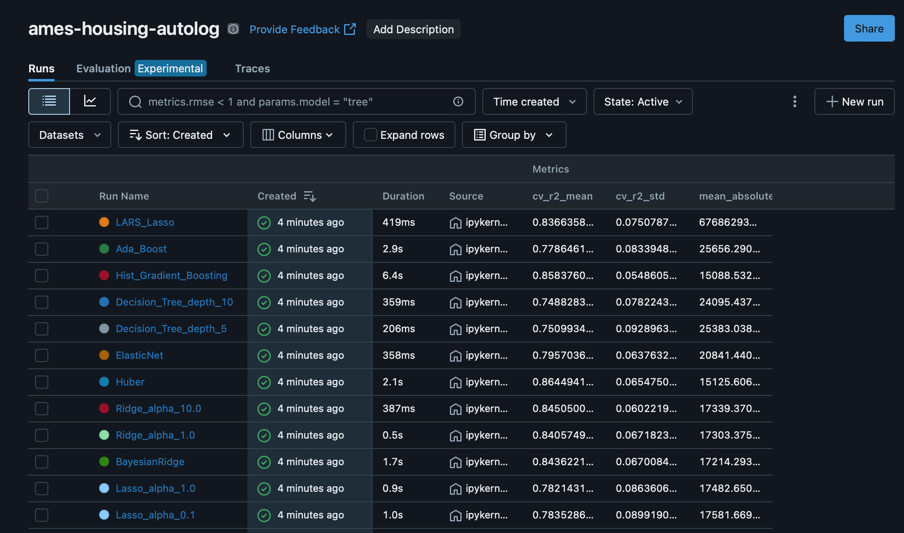
3. Manual logging with PyTorch¶
In this section, we'll implement manual logging for PyTorch models. While scikit-learn has autologging, PyTorch requires manual tracking - giving us full control over what and when to log. MLflow supports autologging for PyTorch Lightning, but we often need low-level control of pure PyTorch.
Note that we need to turn off scikit-learn autologging! Since we are using a Jupyter Notebook, MLflow uses the previously configured autologging unless explicitly turned off.
import numpy as np
import torch
import torch.nn as nn
import torch.optim as optim
from torch.utils.data import DataLoader, TensorDataset
from sklearn.model_selection import KFold
# disable sklearn autologging!
mlflow.sklearn.autolog(disable=True)
mlflow.set_experiment("pytorch-housing-manual")
<Experiment: artifact_location='/Users/bartoszkordek/PycharmProjects/MLOps_course_lab5/mlflow-artifacts/2', creation_time=1773794544428, experiment_id='2', last_update_time=1773794544428, lifecycle_stage='active', name='pytorch-housing-manual', tags={}>
3.1 Targets transformation¶
Before training the neural network, we will transform the training target, in order to stabilize the training. To see why, let's plot the house prices:
y_train.plot.hist()
<Axes: ylabel='Frequency'>
![No description has been provided for this image]()
Training on such targets is possible, but very large target values easily risk overflow, particularly when a loss function like mean squared error is used. We will use the log-transform to transform this distribution, as it's near-exponential, so it should bring it closer to normal, and also greatly reduce the values range.
Of course, we will need to transform the network predictions back again to evaluate them.
y_train_log = np.log1p(y_train)
pd.Series(y_train_log).plot.hist()
<Axes: ylabel='Frequency'>
![No description has been provided for this image]()
3.2 Define and train the model¶
Since we have tabular data, we will use a simple 2-layer multilayer perceptron (MLP).
class HousePriceNet(nn.Module):
def __init__(self, input_dim, hidden_dim=128, dropout_rate=0.2):
super(HousePriceNet, self).__init__()
self.fc1 = nn.Linear(input_dim, hidden_dim)
self.relu = nn.ReLU()
self.dropout = nn.Dropout(dropout_rate)
self.fc2 = nn.Linear(hidden_dim, 1)
def forward(self, x):
x = self.fc1(x)
x = self.relu(x)
x = self.dropout(x)
x = self.fc2(x)
return x
For training, we will check both the 5-fold CV performance, and the traditional train-test split. Cross-validation will give us an additional, robust performance estimation, as well as standard deviation, which is useful for comparing performances of different models. After all, if the difference between models would be within one standard deviation, it wouldn't really be meaningful.
import torch.nn as nn
class PyTorchTrainer:
def __init__(
self, model_class: type[nn.Module], config: dict
):
required_keys = ['hidden_units', 'dropout', 'batch_size', 'learning_rate',
'log_interval', 'epochs', 'name']
missing = [key for key in required_keys if key not in config]
if missing:
raise ValueError(f"Missing required config keys: {missing}")
self.model_class = model_class
self.config = config
def create_model(self, input_dim: int) -> nn.Module:
return self.model_class(
input_dim=input_dim,
hidden_dim=self.config["hidden_units"],
dropout_rate=self.config["dropout"],
)
def create_data_loader(
self, X: torch.Tensor, y: torch.Tensor, shuffle: bool = True
) -> DataLoader:
dataset = TensorDataset(X, y)
return DataLoader(
dataset, batch_size=self.config["batch_size"], shuffle=shuffle
)
def train_epoch(
self,
model: nn.Module,
train_loader: DataLoader,
criterion: nn.Module,
optimizer: optim.Optimizer,
) -> float:
model.train()
epoch_loss = 0.0
batch_count = 0
for batch_X, batch_y in train_loader:
optimizer.zero_grad()
outputs = model(batch_X)
loss = criterion(outputs, batch_y)
loss.backward()
optimizer.step()
epoch_loss += loss.item()
batch_count += 1
return epoch_loss / batch_count
def train_model(
self,
model: nn.Module,
train_loader: DataLoader,
epochs: int,
metric_prefix: str = "",
) -> None:
criterion = nn.MSELoss()
optimizer = optim.Adam(model.parameters(), lr=self.config["learning_rate"])
for epoch in range(epochs):
avg_mse = self.train_epoch(model, train_loader, criterion, optimizer)
if epoch % self.config["log_interval"] == 0:
metric_name = (
f"{metric_prefix}train_mse" if metric_prefix else "train_mse"
)
# manually log metric value, with a given name and step value
mlflow.log_metric(metric_name, avg_mse, step=epoch)
@torch.no_grad()
def evaluate_model(
self,
model: nn.Module,
X: torch.Tensor,
y_test: torch.Tensor,
log_prefix: str = "",
) -> dict[str, float]:
model.eval()
y_pred_norm = model(X)
# revert the logarithm with exponent
y_pred = np.expm1(y_pred_norm.numpy())
y_test = y_test.numpy()
rmse = root_mean_squared_error(y_test.ravel(), y_pred.ravel())
mae = mean_absolute_error(y_test.ravel(), y_pred.ravel())
r2 = r2_score(y_test.ravel(), y_pred.ravel())
if log_prefix:
# manually log metrics that we want
mlflow.log_metric(f"{log_prefix}_rmse", rmse)
mlflow.log_metric(f"{log_prefix}_mae", mae)
mlflow.log_metric(f"{log_prefix}_r2", r2)
return {"rmse": rmse, "mae": mae, "r2": r2}
def run_cross_validation(
self, X_train: torch.Tensor, y_train: torch.Tensor, n_splits: int = 5
) -> tuple[float, float, list[float]]:
kf = KFold(n_splits=n_splits, shuffle=True, random_state=42)
cv_scores = []
for fold, (train_idx, val_idx) in enumerate(kf.split(X_train)):
print(f"\nTraining Fold {fold + 1}/{n_splits}...")
X_fold_train = X_train[train_idx]
y_fold_train = y_train[train_idx]
X_fold_val = X_train[val_idx]
y_fold_val = y_train[val_idx]
fold_model = self.create_model(X_train.shape[1])
fold_loader = self.create_data_loader(X_fold_train, y_fold_train)
self.train_model(
fold_model,
fold_loader,
self.config["epochs"],
metric_prefix=f"fold_{fold + 1}_",
)
# transform validation data with exponent back to original unit
y_fold_val = np.expm1(y_fold_val)
val_metrics = self.evaluate_model(
fold_model, X_fold_val, y_fold_val, log_prefix=f"fold_{fold + 1}_val"
)
cv_scores.append(val_metrics["r2"])
print(
f" Fold {fold + 1} "
f"Validation - RMSE: {val_metrics['rmse']:.2f}, "
f"MAE: {val_metrics['mae']:.2f} "
f"R^2: {val_metrics['r2']:.3f}"
)
return np.mean(cv_scores), np.std(cv_scores), cv_scores
def _log_dvc_metadata(self, dvc_file_path: str = 'data/ames_data_2006_2008.parquet.dvc'):
try:
dvc_metadata = get_dvc_metadata(dvc_file_path)
mlflow.log_param("data_dvc_md5", dvc_metadata['md5'])
mlflow.log_param("data_dvc_size", dvc_metadata['size'])
mlflow.log_param("data_path", dvc_metadata['path'])
print(f"Logged DVC metadata: {dvc_metadata['md5'][:8]}...")
except FileNotFoundError:
print("DVC file not found - skipping metadata logging")
except Exception as e:
print(f"Could not log DVC metadata: {e}")
def fit(
self,
X_train: pd.DataFrame | np.ndarray,
y_train: pd.Series | np.ndarray,
X_test: pd.DataFrame | np.ndarray,
y_test: pd.Series | np.ndarray,
) -> dict:
X_train, X_test, y_train, y_test = self._prepare_tensors(
X_train, X_test, y_train, y_test
)
with mlflow.start_run(run_name=self.config["name"]):
mlflow.log_params(self.config)
# Log DVC metadata for data versioning
self._log_dvc_metadata()
print(f"Starting 5-fold cross-validation for {self.config['name']}...")
cv_mean, cv_std, cv_scores = self.run_cross_validation(X_train, y_train)
mlflow.log_metric("cv_r2_mean", cv_mean)
mlflow.log_metric("cv_r2_std", cv_std)
print(
f"\nCross-validation complete. Mean R^2: {cv_mean:.3f} (+/- {cv_std:.3f})"
)
print("\nTraining final model on all training data...")
final_model = self.create_model(X_train.shape[1])
final_loader = self.create_data_loader(X_train, y_train)
self.train_model(
final_model,
final_loader,
self.config["epochs"],
metric_prefix="final_model_",
)
print("\nEvaluating on test set...")
test_metrics = self.evaluate_model(final_model, X_test, y_test)
mlflow.log_metric("test_rmse", test_metrics["rmse"])
mlflow.log_metric("test_mae", test_metrics["mae"])
mlflow.log_metric("test_r2", test_metrics["r2"])
self._print_results(test_metrics, cv_mean, cv_std)
return {
"rmse": test_metrics["rmse"],
"mae": test_metrics["mae"],
"r2": test_metrics["r2"],
"cv_r2_mean": cv_mean,
"cv_r2_std": cv_std,
"cv_scores": cv_scores,
}
def _prepare_tensors(self, X_train, X_test, y_train, y_test) -> tuple:
y_train = np.array(y_train)
y_test = np.array(y_test)
X_train_tensor = torch.FloatTensor(X_train)
y_train_tensor = torch.FloatTensor(y_train.reshape(-1, 1))
X_test_tensor = torch.FloatTensor(X_test)
y_test_tensor = torch.FloatTensor(y_test.reshape(-1, 1))
print(f"Training samples: {X_train_tensor.shape[0]}")
print(f"Input features: {X_train_tensor.shape[1]}")
return X_train_tensor, X_test_tensor, y_train_tensor, y_test_tensor
def _print_results(
self, test_metrics: dict[str, float], cv_mean: float, cv_std: float
) -> None:
print(f"{'=' * 50}\n")
print(f" Mean R^2: {cv_mean:.3f} (+/- {cv_std:.3f})")
print("\nCross-Validation Performance:")
print(f" R^2: {test_metrics['r2']:.3f}")
print(f" RMSE: {test_metrics['rmse']:.2f}")
print(f" MAE: {test_metrics['mae']:.2f}")
print("Test Set Performance:")
print(f"{'=' * 50}")
print(f"FINAL RESULTS for {self.config['name']}:")
print(f"\n{'=' * 50}")
Quite a bit of code there! So now let's train the model.
Configuration¶
base_config contains fixed parameters that stay the same across all experiments:
model_class: The neural network architecture we're using (HousePriceNet)random_seed: For reproducibility (42)log_interval: How often to log metrics during training (every 5 epochs)num_samples: Dataset sizeinput_features: Number of input featuresk_folds: Number of cross-validation folds (5)
experiment_config contains hyperparameters we want to tune:
name: Unique identifier for this experiment runhidden_units: Size of the hidden layer (128, 256, 512, etc.)dropout: Dropout rate for regularization (0.0 to 0.5)learning_rate: Step size for gradient descent (0.001 to 0.1)epochs: Number of training iterations (50, 100, 150, etc.)batch_size: Number of samples per training batch (16, 32, 64, etc.)
If you want you can deliver your own NeuralNetwork model, and just specify in experiment_config: {"model_class": YourOwnModel} it will overwrite the our base HousePriceNet
3. Merging configurations¶
We use Python's dictionary merge operator | to combine them:
training_config = base_config | experiment_config
This creates a single configuration dictionary with all parameters. The experiment_config values override any duplicate keys from base_config, allowing us to easily experiment with different hyperparameters while keeping the base setup constant.
Now let's set up our first experiment:
base_config = {
"model_class": HousePriceNet,
"random_seed": 42,
"log_interval": 5,
"num_samples": X_train.shape[0],
"input_features": X_train.shape[1],
"k_folds": 5,
}
experiment_config = {
"name": "first_run",
"hidden_units": 128,
"dropout": 0.1,
"learning_rate": 0.03,
"epochs": 150,
"batch_size": 32,
}
training_config = base_config | experiment_config
trainer = PyTorchTrainer(training_config["model_class"], training_config)
trainer.fit(X_train, y_train_log, X_test, y_test)
Training samples: 1319 Input features: 209 Logged DVC metadata: f4405333... Starting 5-fold cross-validation for first_run... Training Fold 1/5... Fold 1 Validation - RMSE: 45887.96, MAE: 31505.71 R^2: 0.763 Training Fold 2/5... Fold 2 Validation - RMSE: 45488.02, MAE: 33051.43 R^2: 0.677 Training Fold 3/5... Fold 3 Validation - RMSE: 44405.21, MAE: 27862.10 R^2: 0.735 Training Fold 4/5... Fold 4 Validation - RMSE: 40238.88, MAE: 29107.54 R^2: 0.720 Training Fold 5/5... Fold 5 Validation - RMSE: 68874.59, MAE: 29947.75 R^2: 0.133 Cross-validation complete. Mean R^2: 0.606 (+/- 0.238) Training final model on all training data... Evaluating on test set... ================================================== Mean R^2: 0.606 (+/- 0.238) Cross-Validation Performance: R^2: 0.643 RMSE: 45132.48 MAE: 19131.90 Test Set Performance: ================================================== FINAL RESULTS for first_run: ================================================== 🏃 View run first_run at: http://localhost:5001/#/experiments/2/runs/bf4f41cc235444b9aad649d8cf469a29 🧪 View experiment at: http://localhost:5001/#/experiments/2
{'rmse': 45132.484375,
'mae': 19131.904296875,
'r2': 0.6429598331451416,
'cv_r2_mean': np.float64(0.6056980967521668),
'cv_r2_std': np.float64(0.23774225125623077),
'cv_scores': [0.7630815505981445,
0.6768988370895386,
0.7353383302688599,
0.719671905040741,
0.1334998607635498]}
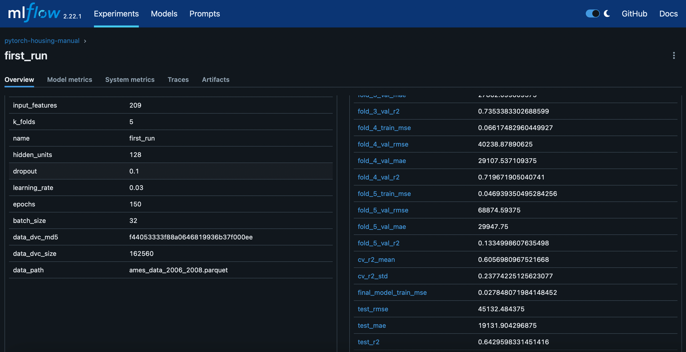
Exercise 2¶
Your task is to:
- Run 10 experiments by modifying the hyperparameter configuration. Try to improve model performance, which is currently overfitted.
- Analyze results in MLflow UI.
- Comment on what changes impacted the model performance the most, and what changes disrupted the training process.
- Compare the results of our first scikit-learn configuration with the first PyTorch experiments. Do you see any overfitting in the first PyTorch experiment? Explain what signs of overfitting can indicate this situation.
How to modify configurations:
You have two approaches:
Approach 1: Loop through multiple configurations (Recommended for systematic exploration)¶
Define a list of experiment configurations and iterate through them. Each configuration dictionary should contain only the hyperparameters you want to tune (name, hidden_units, dropout, learning_rate, epochs, batch_size). The base_config stays the same.
base_config = {
"model_class": HousePriceNet,
"random_seed": 42,
"log_interval": 5,
"input_features": X_train.shape[1], # Number of features (181)
"num_samples": X_train.shape[0], # Dataset size (1312)
"target_normalized": True,
"k_folds": 5,
}
# Define multiple experiments to run
configs = [
{
"name": "baseline_128_units",
"hidden_units": 128,
"dropout": 0.1,
"learning_rate": 0.03,
"epochs": 150,
"batch_size": 32,
},
{
"name": "larger_network_256",
"hidden_units": 256, # Try larger network
"dropout": 0.2, # More dropout for regularization
"learning_rate": 0.01, # Lower learning rate
"epochs": 200,
"batch_size": 64,
},
{
"name": "high_regularization",
"hidden_units": 128,
"dropout": 0.3, # Even more dropout
"learning_rate": 0.01,
"epochs": 150,
"batch_size": 32,
},
# Add 7 more configurations here...
]
# Run all experiments
for experiment_config in configs:
training_config = base_config | experiment_config
trainer = PyTorchTrainer(training_config["model_class"], training_config)
results = trainer.fit(X_train, y_train_log, X_test, y_test)
Approach 2: Manual and incremental (Good for quick iterations)¶
Run experiments one by one, adjusting hyperparameters based on previous results:
# First experiment
experiment_config = {
"name": "experiment_01_baseline",
"hidden_units": 128,
"dropout": 0.1,
"learning_rate": 0.03,
"epochs": 150,
"batch_size": 32,
}
training_config = base_config | experiment_config
trainer = PyTorchTrainer(training_config["model_class"], training_config)
results = trainer.fit(X_train, y_train_log, X_test, y_test)
After analyzing results in MLflow, run another experiment
experiment_config = {
"name": "experiment_02_more_dropout",
"hidden_units": 128,
"dropout": 0.3, # Increased from 0.1
"learning_rate": 0.03,
"epochs": 150,
"batch_size": 32,
}
training_config = base_config | experiment_config
trainer = PyTorchTrainer(training_config["model_class"], training_config)
results = trainer.fit(X_train, y_train_log, X_test, y_test)
# Continue with more experiments
Tips for hyperparameter tuning:
- Start with one change at a time to understand its impact
- Use meaningful experiment names that describe what you changed
- Check MLflow UI after each experiment to guide your next choice
- Look for signs of overfitting: high training performance but poor test performance
- Watch the training curves in MLflow's "Model metrics" tab
Lab assessment¶
Fill the code exercises in this Jupyter notebook, and send it with completed exercises, written comments in Markdown cells (particularly for questions in exercise 2), and screenshots of results in MLflow.
Starting configuration¶
experiment_config = {
"name": "exp01_dropout_03",
"hidden_units": 128,
"dropout": 0.3,
"learning_rate": 0.03,
"epochs": 150,
"batch_size": 32,
}
training_config = base_config | experiment_config
trainer = PyTorchTrainer(training_config["model_class"], training_config)
results = trainer.fit(X_train, y_train_log, X_test, y_test)
Training samples: 1319 Input features: 209 Logged DVC metadata: f4405333... Starting 5-fold cross-validation for exp01_dropout_03... Training Fold 1/5... Fold 1 Validation - RMSE: 36427.61, MAE: 23669.16 R^2: 0.851 Training Fold 2/5... Fold 2 Validation - RMSE: 26885.30, MAE: 16230.41 R^2: 0.887 Training Fold 3/5... Fold 3 Validation - RMSE: 57958.91, MAE: 23157.32 R^2: 0.549 Training Fold 4/5... Fold 4 Validation - RMSE: 30868.88, MAE: 21321.11 R^2: 0.835 Training Fold 5/5... Fold 5 Validation - RMSE: 59365.30, MAE: 20397.79 R^2: 0.356 Cross-validation complete. Mean R^2: 0.696 (+/- 0.208) Training final model on all training data... Evaluating on test set... ================================================== Mean R^2: 0.696 (+/- 0.208) Cross-Validation Performance: R^2: 0.493 RMSE: 53774.96 MAE: 22099.16 Test Set Performance: ================================================== FINAL RESULTS for exp01_dropout_03: ================================================== 🏃 View run exp01_dropout_03 at: http://localhost:5001/#/experiments/2/runs/1ddf647a8fcc4c458f9f07cd875146ce 🧪 View experiment at: http://localhost:5001/#/experiments/2
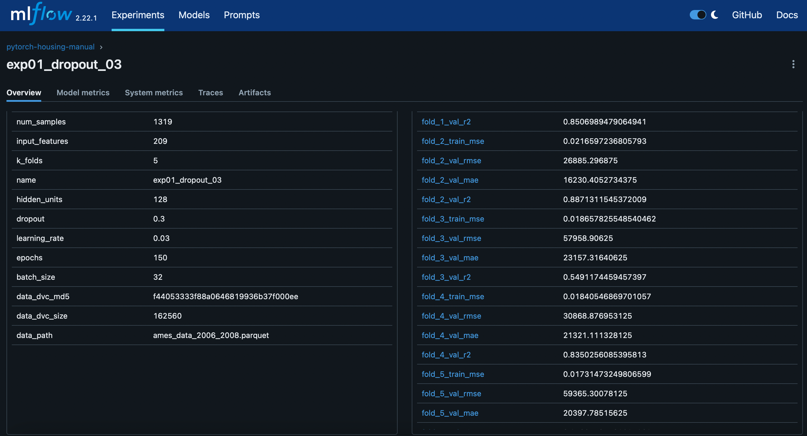
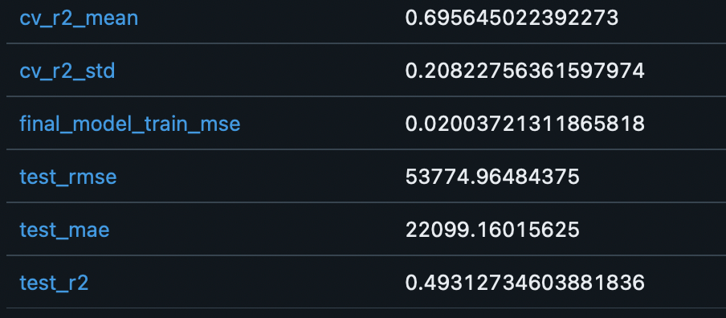
experiment_config = {
"name": "exp01_a_dropout_03_learning_rate_015_epochs_200",
"hidden_units": 128,
"dropout": 0.3,
"learning_rate": 0.015,
"epochs": 200,
"batch_size": 32,
}
training_config = base_config | experiment_config
trainer = PyTorchTrainer(training_config["model_class"], training_config)
results = trainer.fit(X_train, y_train_log, X_test, y_test)
Training samples: 1319 Input features: 209 Logged DVC metadata: f4405333... Starting 5-fold cross-validation for exp01_a_dropout_03_learning_rate_015_epochs_200... Training Fold 1/5... Fold 1 Validation - RMSE: 29847.61, MAE: 18587.08 R^2: 0.900 Training Fold 2/5... Fold 2 Validation - RMSE: 23758.72, MAE: 15039.38 R^2: 0.912 Training Fold 3/5... Fold 3 Validation - RMSE: 44675.40, MAE: 21663.03 R^2: 0.732 Training Fold 4/5... Fold 4 Validation - RMSE: 25364.40, MAE: 17941.06 R^2: 0.889 Training Fold 5/5... Fold 5 Validation - RMSE: 49513.45, MAE: 18898.84 R^2: 0.552 Cross-validation complete. Mean R^2: 0.797 (+/- 0.139) Training final model on all training data... Evaluating on test set... ================================================== Mean R^2: 0.797 (+/- 0.139) Cross-Validation Performance: R^2: 0.706 RMSE: 40973.79 MAE: 21102.73 Test Set Performance: ================================================== FINAL RESULTS for exp01_a_dropout_03_learning_rate_015_epochs_200: ================================================== 🏃 View run exp01_a_dropout_03_learning_rate_015_epochs_200 at: http://localhost:5001/#/experiments/2/runs/e6abe3527896410b8e515f0eea4fb31c 🧪 View experiment at: http://localhost:5001/#/experiments/2
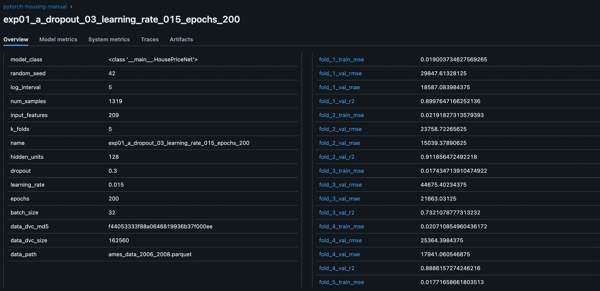
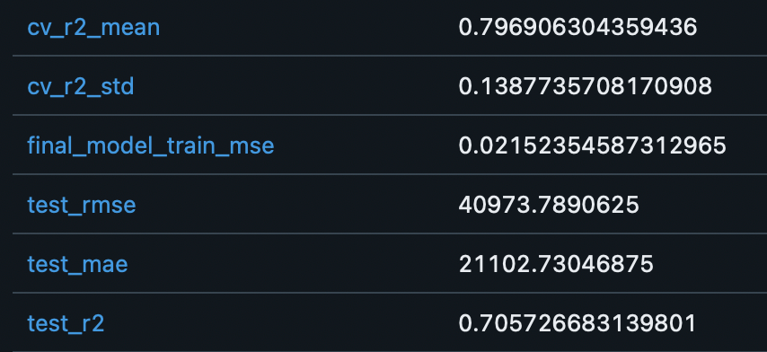
experiment_config = {
"name": "exp02_dropout_03_hidden_units_256",
"hidden_units": 256,
"dropout": 0.3,
"learning_rate": 0.03,
"epochs": 150,
"batch_size": 32,
}
training_config = base_config | experiment_config
trainer = PyTorchTrainer(training_config["model_class"], training_config)
results = trainer.fit(X_train, y_train_log, X_test, y_test)
Training samples: 1319 Input features: 209 Logged DVC metadata: f4405333... Starting 5-fold cross-validation for exp02_dropout_03_hidden_units_256... Training Fold 1/5... Fold 1 Validation - RMSE: 30086.62, MAE: 19719.23 R^2: 0.898 Training Fold 2/5... Fold 2 Validation - RMSE: 24104.34, MAE: 16715.25 R^2: 0.909 Training Fold 3/5... Fold 3 Validation - RMSE: 45610.37, MAE: 23555.34 R^2: 0.721 Training Fold 4/5... Fold 4 Validation - RMSE: 26476.65, MAE: 19853.27 R^2: 0.879 Training Fold 5/5... Fold 5 Validation - RMSE: 47439.70, MAE: 19071.92 R^2: 0.589 Cross-validation complete. Mean R^2: 0.799 (+/- 0.125) Training final model on all training data... Evaluating on test set... ================================================== Mean R^2: 0.799 (+/- 0.125) Cross-Validation Performance: R^2: 0.721 RMSE: 39909.74 MAE: 23453.32 Test Set Performance: ================================================== FINAL RESULTS for exp02_dropout_03_hidden_units_256: ================================================== 🏃 View run exp02_dropout_03_hidden_units_256 at: http://localhost:5001/#/experiments/2/runs/0f6187fd9aa94140ab4c6fa6494bb420 🧪 View experiment at: http://localhost:5001/#/experiments/2
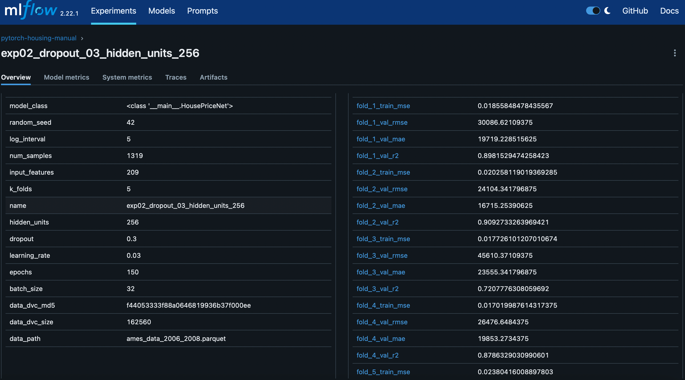
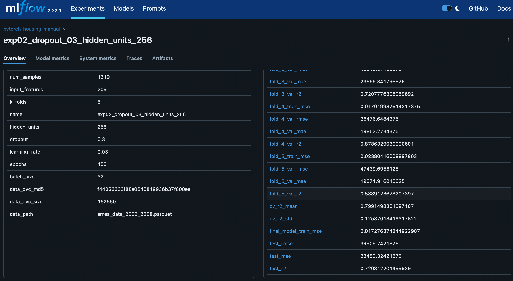
experiment_config = {
"name": "exp02_a_hidden_units_256_learning_rate_0005_epochs_300",
"hidden_units": 256,
"dropout": 0.3,
"learning_rate": 0.005,
"epochs": 300,
"batch_size": 32,
}
training_config = base_config | experiment_config
trainer = PyTorchTrainer(training_config["model_class"], training_config)
results = trainer.fit(X_train, y_train_log, X_test, y_test)
Training samples: 1319 Input features: 209 Logged DVC metadata: f4405333... Starting 5-fold cross-validation for exp02_a_hidden_units_256_learning_rate_0005_epochs_300... Training Fold 1/5... Fold 1 Validation - RMSE: 43423.45, MAE: 26353.16 R^2: 0.788 Training Fold 2/5... Fold 2 Validation - RMSE: 38860.96, MAE: 26904.78 R^2: 0.764 Training Fold 3/5... Fold 3 Validation - RMSE: 46264.28, MAE: 34417.80 R^2: 0.713 Training Fold 4/5... Fold 4 Validation - RMSE: 39279.22, MAE: 29361.47 R^2: 0.733 Training Fold 5/5... Fold 5 Validation - RMSE: 102061.61, MAE: 52586.73 R^2: -0.903 Cross-validation complete. Mean R^2: 0.419 (+/- 0.661) Training final model on all training data... Evaluating on test set... ================================================== Mean R^2: 0.419 (+/- 0.661) Cross-Validation Performance: R^2: 0.711 RMSE: 40577.49 MAE: 19387.20 Test Set Performance: ================================================== FINAL RESULTS for exp02_a_hidden_units_256_learning_rate_0005_epochs_300: ================================================== 🏃 View run exp02_a_hidden_units_256_learning_rate_0005_epochs_300 at: http://localhost:5001/#/experiments/2/runs/156187ad62b44f2287857993ac9b2cc5 🧪 View experiment at: http://localhost:5001/#/experiments/2
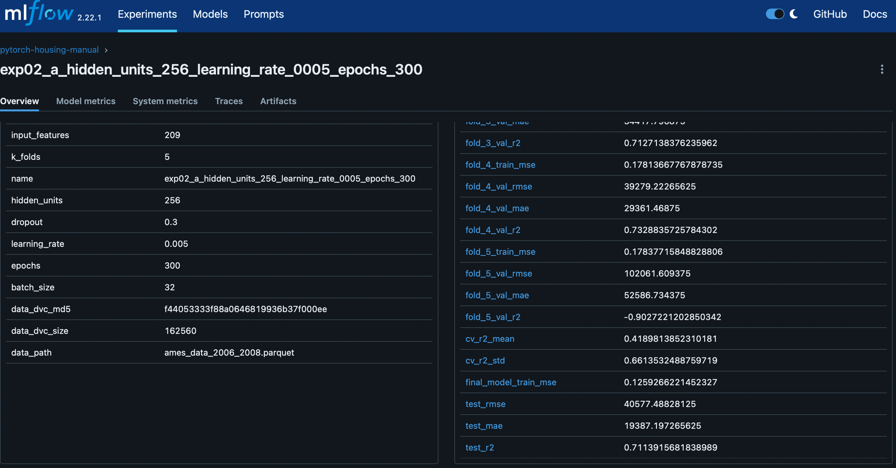
experiment_config = {
"name": "exp02_hidden_units_64_dropout_02_learning_rate_0001_epochs_200_batch_size_64",
"hidden_units": 64,
"dropout": 0.2,
"learning_rate": 0.001,
"epochs": 200,
"batch_size": 64,
}
training_config = base_config | experiment_config
trainer = PyTorchTrainer(training_config["model_class"], training_config)
results = trainer.fit(X_train, y_train_log, X_test, y_test)
Training samples: 1319 Input features: 209 Logged DVC metadata: f4405333... Starting 5-fold cross-validation for exp02_hidden_units_64_dropout_02_learning_rate_0001_epochs_200_batch_size_64... Training Fold 1/5... Fold 1 Validation - RMSE: 71713.03, MAE: 42802.03 R^2: 0.421 Training Fold 2/5... Fold 2 Validation - RMSE: 67338.56, MAE: 48509.18 R^2: 0.292 Training Fold 3/5... Fold 3 Validation - RMSE: 93502.24, MAE: 46013.89 R^2: -0.173 Training Fold 4/5... Fold 4 Validation - RMSE: 53258.04, MAE: 38088.38 R^2: 0.509 Training Fold 5/5... Fold 5 Validation - RMSE: 59637.13, MAE: 40329.50 R^2: 0.350 Cross-validation complete. Mean R^2: 0.280 (+/- 0.238) Training final model on all training data... Evaluating on test set... ================================================== Mean R^2: 0.280 (+/- 0.238) Cross-Validation Performance: R^2: 0.198 RMSE: 67647.49 MAE: 39759.26 Test Set Performance: ================================================== FINAL RESULTS for exp02_hidden_units_64_dropout_02_learning_rate_0001_epochs_200_batch_size_64: ================================================== 🏃 View run exp02_hidden_units_64_dropout_02_learning_rate_0001_epochs_200_batch_size_64 at: http://localhost:5001/#/experiments/2/runs/a1a859f085d449cab1b01282663f1c78 🧪 View experiment at: http://localhost:5001/#/experiments/2
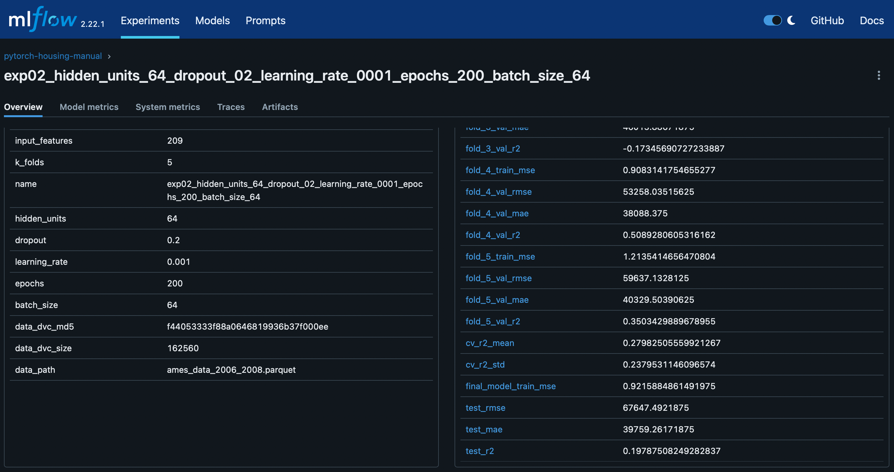
experiment_config = {
"name": "exp03_dropout_04_hidden_units_512",
"hidden_units": 512,
"dropout": 0.4,
"learning_rate": 0.03,
"epochs": 150,
"batch_size": 32,
}
training_config = base_config | experiment_config
trainer = PyTorchTrainer(training_config["model_class"], training_config)
results = trainer.fit(X_train, y_train_log, X_test, y_test)
Training samples: 1319 Input features: 209 Logged DVC metadata: f4405333... Starting 5-fold cross-validation for exp03_dropout_04_hidden_units_512... Training Fold 1/5... Fold 1 Validation - RMSE: 36176.63, MAE: 22544.13 R^2: 0.853 Training Fold 2/5... Fold 2 Validation - RMSE: 31105.65, MAE: 20210.44 R^2: 0.849 Training Fold 3/5... Fold 3 Validation - RMSE: 51441.39, MAE: 23056.53 R^2: 0.645 Training Fold 4/5... Fold 4 Validation - RMSE: 30698.28, MAE: 21773.21 R^2: 0.837 Training Fold 5/5... Fold 5 Validation - RMSE: 54005.13, MAE: 19075.86 R^2: 0.467 Cross-validation complete. Mean R^2: 0.730 (+/- 0.153) Training final model on all training data... Evaluating on test set... ================================================== Mean R^2: 0.730 (+/- 0.153) Cross-Validation Performance: R^2: 0.669 RMSE: 43425.79 MAE: 24064.59 Test Set Performance: ================================================== FINAL RESULTS for exp03_dropout_04_hidden_units_512: ================================================== 🏃 View run exp03_dropout_04_hidden_units_512 at: http://localhost:5001/#/experiments/2/runs/7680266c988a4ffb923b9aba9ed21a5f 🧪 View experiment at: http://localhost:5001/#/experiments/2
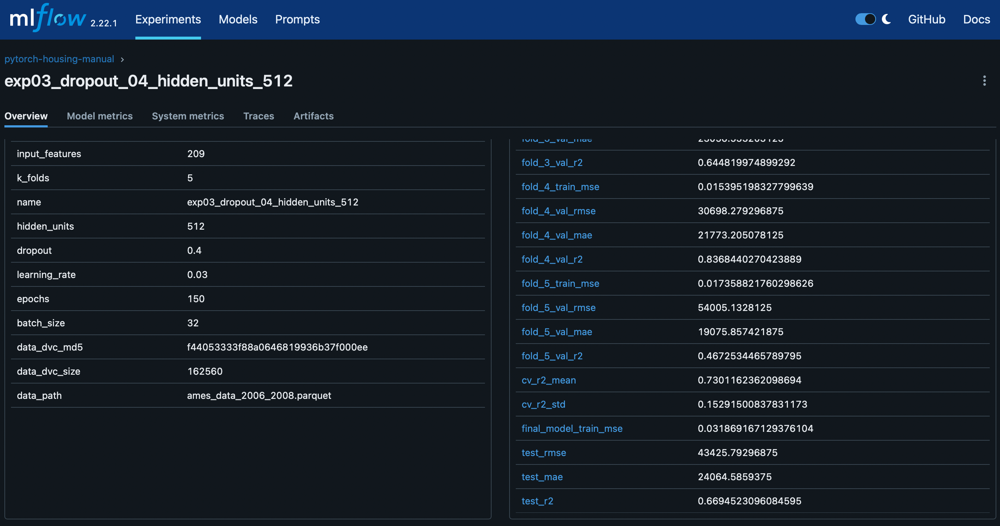
experiment_config = {
"name": "exp04_learning_rate_005",
"hidden_units": 128,
"dropout": 0.1,
"learning_rate": 0.05,
"epochs": 150,
"batch_size": 32,
}
training_config = base_config | experiment_config
trainer = PyTorchTrainer(training_config["model_class"], training_config)
results = trainer.fit(X_train, y_train_log, X_test, y_test)
Training samples: 1319 Input features: 209 Logged DVC metadata: f4405333... Starting 5-fold cross-validation for exp04_learning_rate_005... Training Fold 1/5... Fold 1 Validation - RMSE: 28823.97, MAE: 17652.25 R^2: 0.907 Training Fold 2/5... Fold 2 Validation - RMSE: 27118.74, MAE: 16675.66 R^2: 0.885 Training Fold 3/5... Fold 3 Validation - RMSE: 53107.31, MAE: 21218.34 R^2: 0.621 Training Fold 4/5... Fold 4 Validation - RMSE: 25256.92, MAE: 18183.55 R^2: 0.890 Training Fold 5/5... Fold 5 Validation - RMSE: 50331.89, MAE: 18342.15 R^2: 0.537 Cross-validation complete. Mean R^2: 0.768 (+/- 0.156) Training final model on all training data... Evaluating on test set... ================================================== Mean R^2: 0.768 (+/- 0.156) Cross-Validation Performance: R^2: 0.534 RMSE: 51560.85 MAE: 34454.33 Test Set Performance: ================================================== FINAL RESULTS for exp04_learning_rate_005: ================================================== 🏃 View run exp04_learning_rate_005 at: http://localhost:5001/#/experiments/2/runs/7e152c8348cf448faffa8d5b4b64faba 🧪 View experiment at: http://localhost:5001/#/experiments/2
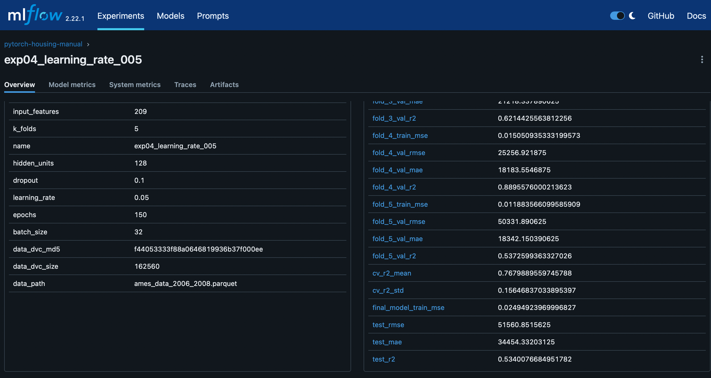
experiment_config = {
"name": "exp05_epochs_250",
"hidden_units": 128,
"dropout": 0.1,
"learning_rate": 0.03,
"epochs": 250,
"batch_size": 32,
}
training_config = base_config | experiment_config
trainer = PyTorchTrainer(training_config["model_class"], training_config)
results = trainer.fit(X_train, y_train_log, X_test, y_test)
Training samples: 1319 Input features: 209 Logged DVC metadata: f4405333... Starting 5-fold cross-validation for exp05_epochs_250... Training Fold 1/5... Fold 1 Validation - RMSE: 27561.86, MAE: 18560.00 R^2: 0.915 Training Fold 2/5... Fold 2 Validation - RMSE: 32153.70, MAE: 19141.84 R^2: 0.839 Training Fold 3/5... Fold 3 Validation - RMSE: 59185.25, MAE: 20876.97 R^2: 0.530 Training Fold 4/5... Fold 4 Validation - RMSE: 23178.96, MAE: 17129.87 R^2: 0.907 Training Fold 5/5... Fold 5 Validation - RMSE: 50005.40, MAE: 21184.69 R^2: 0.543 Cross-validation complete. Mean R^2: 0.747 (+/- 0.174) Training final model on all training data... Evaluating on test set... ================================================== Mean R^2: 0.747 (+/- 0.174) Cross-Validation Performance: R^2: 0.650 RMSE: 44657.73 MAE: 25032.18 Test Set Performance: ================================================== FINAL RESULTS for exp05_epochs_250: ================================================== 🏃 View run exp05_epochs_250 at: http://localhost:5001/#/experiments/2/runs/ebf60b831d714e4888e143bc1f266a94 🧪 View experiment at: http://localhost:5001/#/experiments/2
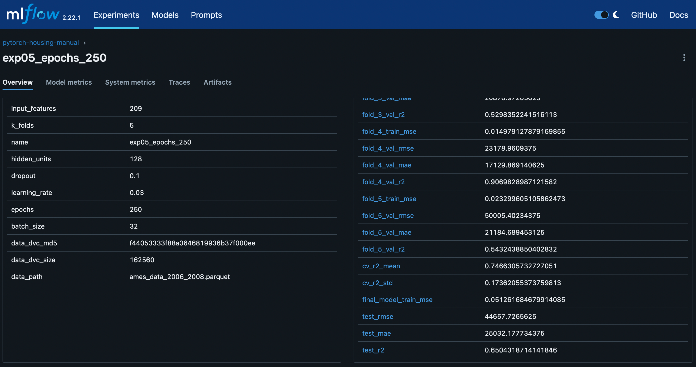
experiment_config = {
"name": "exp06_epochs_250_hidden_units_512_dropout_03_learning_rate_005",
"hidden_units": 512,
"dropout": 0.3,
"learning_rate": 0.05,
"epochs": 250,
"batch_size": 32,
}
training_config = base_config | experiment_config
trainer = PyTorchTrainer(training_config["model_class"], training_config)
results = trainer.fit(X_train, y_train_log, X_test, y_test)
Training samples: 1319 Input features: 209 Logged DVC metadata: f4405333... Starting 5-fold cross-validation for exp06_epochs_250_hidden_units_512_dropout_03_learning_rate_005... Training Fold 1/5... Fold 1 Validation - RMSE: 61056.81, MAE: 39348.62 R^2: 0.581 Training Fold 2/5... Fold 2 Validation - RMSE: 32814.71, MAE: 22303.01 R^2: 0.832 Training Fold 3/5... Fold 3 Validation - RMSE: 61196.76, MAE: 30971.92 R^2: 0.497 Training Fold 4/5... Fold 4 Validation - RMSE: 33233.10, MAE: 24659.72 R^2: 0.809 Training Fold 5/5... Fold 5 Validation - RMSE: 41839.38, MAE: 23793.02 R^2: 0.680 Cross-validation complete. Mean R^2: 0.680 (+/- 0.129) Training final model on all training data... Evaluating on test set... ================================================== Mean R^2: 0.680 (+/- 0.129) Cross-Validation Performance: R^2: 0.462 RMSE: 55383.67 MAE: 29730.35 Test Set Performance: ================================================== FINAL RESULTS for exp06_epochs_250_hidden_units_512_dropout_03_learning_rate_005: ================================================== 🏃 View run exp06_epochs_250_hidden_units_512_dropout_03_learning_rate_005 at: http://localhost:5001/#/experiments/2/runs/97f2723b3ed94e208842aafec6783360 🧪 View experiment at: http://localhost:5001/#/experiments/2
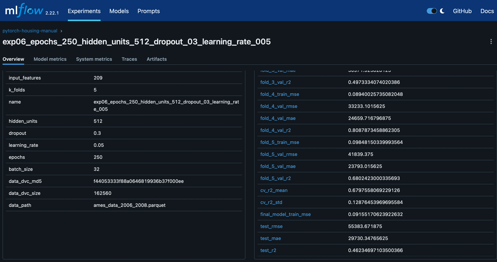
experiment_config = {
"name": "exp07_epochs_100",
"hidden_units": 128,
"dropout": 0.1,
"learning_rate": 0.03,
"epochs": 100,
"batch_size": 32,
}
training_config = base_config | experiment_config
trainer = PyTorchTrainer(training_config["model_class"], training_config)
results = trainer.fit(X_train, y_train_log, X_test, y_test)
Training samples: 1319 Input features: 209 Logged DVC metadata: f4405333... Starting 5-fold cross-validation for exp07_epochs_100... Training Fold 1/5... Fold 1 Validation - RMSE: 55809.41, MAE: 37900.97 R^2: 0.650 Training Fold 2/5... Fold 2 Validation - RMSE: 72481.50, MAE: 46590.54 R^2: 0.180 Training Fold 3/5... Fold 3 Validation - RMSE: 72545.53, MAE: 50885.77 R^2: 0.294 Training Fold 4/5... Fold 4 Validation - RMSE: 57229.13, MAE: 41963.46 R^2: 0.433 Training Fold 5/5... Fold 5 Validation - RMSE: 88303.95, MAE: 76608.33 R^2: -0.424 Cross-validation complete. Mean R^2: 0.226 (+/- 0.361) Training final model on all training data... Evaluating on test set... ================================================== Mean R^2: 0.226 (+/- 0.361) Cross-Validation Performance: R^2: -0.340 RMSE: 87438.49 MAE: 48591.59 Test Set Performance: ================================================== FINAL RESULTS for exp07_epochs_100: ================================================== 🏃 View run exp07_epochs_100 at: http://localhost:5001/#/experiments/2/runs/c9145827129841e29f4c837330ba2d6e 🧪 View experiment at: http://localhost:5001/#/experiments/2
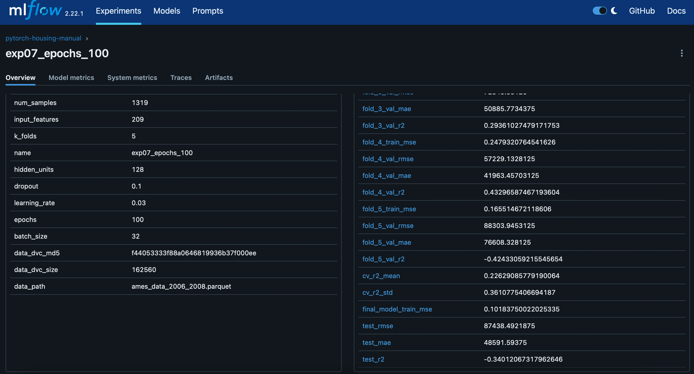
experiment_config = {
"name": "exp08_learning_rate_001",
"hidden_units": 128,
"dropout": 0.1,
"learning_rate": 0.01,
"epochs": 150,
"batch_size": 32,
}
training_config = base_config | experiment_config
trainer = PyTorchTrainer(training_config["model_class"], training_config)
results = trainer.fit(X_train, y_train_log, X_test, y_test)
Training samples: 1319 Input features: 209 Logged DVC metadata: f4405333... Starting 5-fold cross-validation for exp08_learning_rate_001... Training Fold 1/5... Fold 1 Validation - RMSE: 72508.88, MAE: 53528.02 R^2: 0.408 Training Fold 2/5... Fold 2 Validation - RMSE: 40416.05, MAE: 28497.78 R^2: 0.745 Training Fold 3/5... Fold 3 Validation - RMSE: 126381.86, MAE: 91973.12 R^2: -1.144 Training Fold 4/5... Fold 4 Validation - RMSE: 44388.57, MAE: 34967.47 R^2: 0.659 Training Fold 5/5... Fold 5 Validation - RMSE: 100431.56, MAE: 59234.44 R^2: -0.842 Cross-validation complete. Mean R^2: -0.035 (+/- 0.796) Training final model on all training data... Evaluating on test set... ================================================== Mean R^2: -0.035 (+/- 0.796) Cross-Validation Performance: R^2: 0.142 RMSE: 69949.67 MAE: 56050.98 Test Set Performance: ================================================== FINAL RESULTS for exp08_learning_rate_001: ================================================== 🏃 View run exp08_learning_rate_001 at: http://localhost:5001/#/experiments/2/runs/bfef6705b5b843c393488f432c3b3520 🧪 View experiment at: http://localhost:5001/#/experiments/2
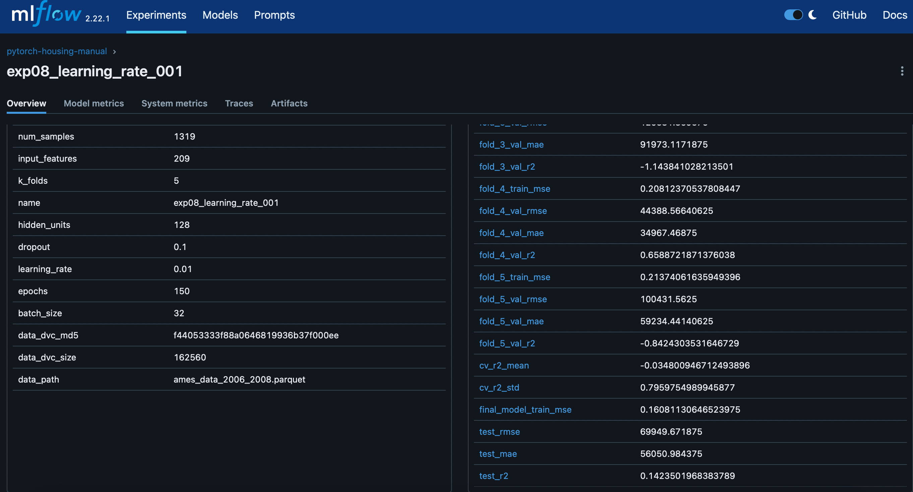
experiment_config = {
"name": "exp09_learning_rate_001_hidden_units_256_dropout_03",
"hidden_units": 256,
"dropout": 0.3,
"learning_rate": 0.01,
"epochs": 150,
"batch_size": 32,
}
training_config = base_config | experiment_config
trainer = PyTorchTrainer(training_config["model_class"], training_config)
results = trainer.fit(X_train, y_train_log, X_test, y_test)
Training samples: 1319 Input features: 209 Logged DVC metadata: f4405333... Starting 5-fold cross-validation for exp09_learning_rate_001_hidden_units_256_dropout_03... Training Fold 1/5... Fold 1 Validation - RMSE: 116692.83, MAE: 93493.52 R^2: -0.532 Training Fold 2/5... Fold 2 Validation - RMSE: 78182.21, MAE: 66092.91 R^2: 0.046 Training Fold 3/5... Fold 3 Validation - RMSE: 86563.23, MAE: 68461.27 R^2: -0.006 Training Fold 4/5... Fold 4 Validation - RMSE: 77721.89, MAE: 64208.51 R^2: -0.046 Training Fold 5/5... Fold 5 Validation - RMSE: 71244.02, MAE: 54357.94 R^2: 0.073 Cross-validation complete. Mean R^2: -0.093 (+/- 0.223) Training final model on all training data... Evaluating on test set... ================================================== Mean R^2: -0.093 (+/- 0.223) Cross-Validation Performance: R^2: 0.454 RMSE: 55835.56 MAE: 39014.55 Test Set Performance: ================================================== FINAL RESULTS for exp09_learning_rate_001_hidden_units_256_dropout_03: ================================================== 🏃 View run exp09_learning_rate_001_hidden_units_256_dropout_03 at: http://localhost:5001/#/experiments/2/runs/bf977656ad5f45dfa8580b660dae35fa 🧪 View experiment at: http://localhost:5001/#/experiments/2
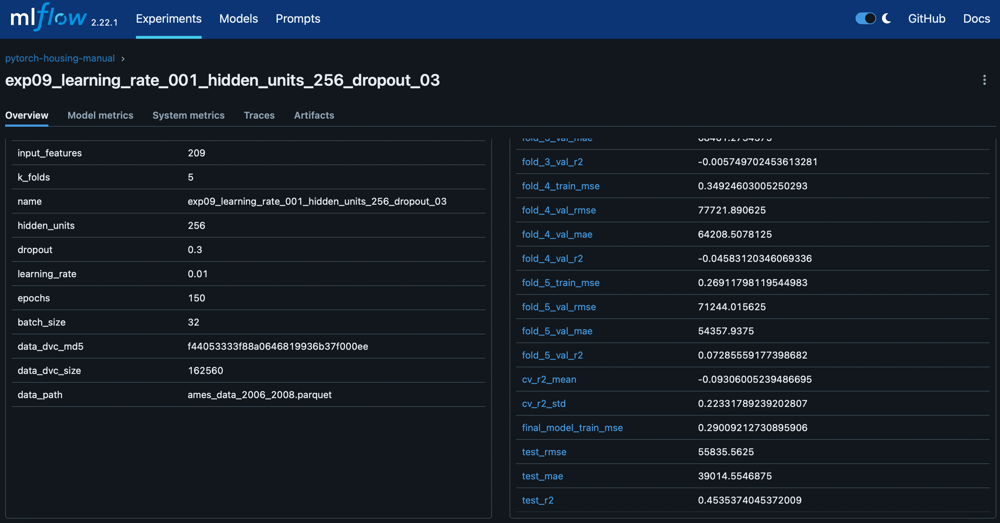
experiment_config = {
"name": "exp10_hidden_units_64",
"hidden_units": 64,
"dropout": 0.1,
"learning_rate": 0.03,
"epochs": 150,
"batch_size": 32,
}
training_config = base_config | experiment_config
trainer = PyTorchTrainer(training_config["model_class"], training_config)
results = trainer.fit(X_train, y_train_log, X_test, y_test)
Training samples: 1319 Input features: 209 Logged DVC metadata: f4405333... Starting 5-fold cross-validation for exp10_hidden_units_64... Training Fold 1/5... Fold 1 Validation - RMSE: 30073.92, MAE: 18107.01 R^2: 0.898 Training Fold 2/5... Fold 2 Validation - RMSE: 25513.18, MAE: 15849.79 R^2: 0.898 Training Fold 3/5... Fold 3 Validation - RMSE: 41769.64, MAE: 18581.89 R^2: 0.766 Training Fold 4/5... Fold 4 Validation - RMSE: 27977.91, MAE: 19725.66 R^2: 0.864 Training Fold 5/5... Fold 5 Validation - RMSE: 50871.83, MAE: 20238.96 R^2: 0.527 Cross-validation complete. Mean R^2: 0.791 (+/- 0.140) Training final model on all training data... Evaluating on test set... ================================================== Mean R^2: 0.791 (+/- 0.140) Cross-Validation Performance: R^2: 0.191 RMSE: 67921.12 MAE: 29538.10 Test Set Performance: ================================================== FINAL RESULTS for exp10_hidden_units_64: ================================================== 🏃 View run exp10_hidden_units_64 at: http://localhost:5001/#/experiments/2/runs/43711ac3fdec487ca301b6afe0f77d9f 🧪 View experiment at: http://localhost:5001/#/experiments/2
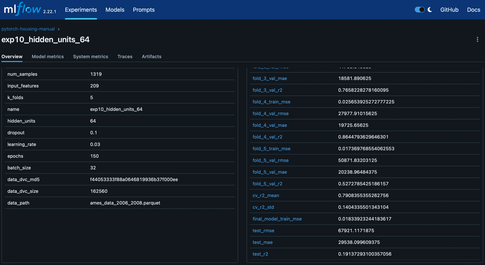
experiment_config = {
"name": "exp11_hidden_units_96_dropout_05_learning_rate_001_epochs_250_batch_size_64",
"hidden_units": 96,
"dropout": 0.5,
"learning_rate": 0.01,
"epochs": 250,
"batch_size": 64,
}
training_config = base_config | experiment_config
trainer = PyTorchTrainer(training_config["model_class"], training_config)
results = trainer.fit(X_train, y_train_log, X_test, y_test)
Training samples: 1319 Input features: 209 Logged DVC metadata: f4405333... Starting 5-fold cross-validation for exp11_hidden_units_96_dropout_05_learning_rate_001_epochs_250_batch_size_64... Training Fold 1/5... Fold 1 Validation - RMSE: 31106.85, MAE: 18320.07 R^2: 0.891 Training Fold 2/5... Fold 2 Validation - RMSE: 23349.23, MAE: 15970.69 R^2: 0.915 Training Fold 3/5... Fold 3 Validation - RMSE: 41713.50, MAE: 20855.44 R^2: 0.766 Training Fold 4/5... Fold 4 Validation - RMSE: 31058.00, MAE: 20978.34 R^2: 0.833 Training Fold 5/5... Fold 5 Validation - RMSE: 36266.51, MAE: 17911.46 R^2: 0.760 Cross-validation complete. Mean R^2: 0.833 (+/- 0.063) Training final model on all training data... Evaluating on test set... ================================================== Mean R^2: 0.833 (+/- 0.063) Cross-Validation Performance: R^2: 0.693 RMSE: 41874.36 MAE: 18424.30 Test Set Performance: ================================================== FINAL RESULTS for exp11_hidden_units_96_dropout_05_learning_rate_001_epochs_250_batch_size_64: ================================================== 🏃 View run exp11_hidden_units_96_dropout_05_learning_rate_001_epochs_250_batch_size_64 at: http://localhost:5001/#/experiments/2/runs/e1ae04f3d5fa4e22af8dd952bc0f3f5a 🧪 View experiment at: http://localhost:5001/#/experiments/2
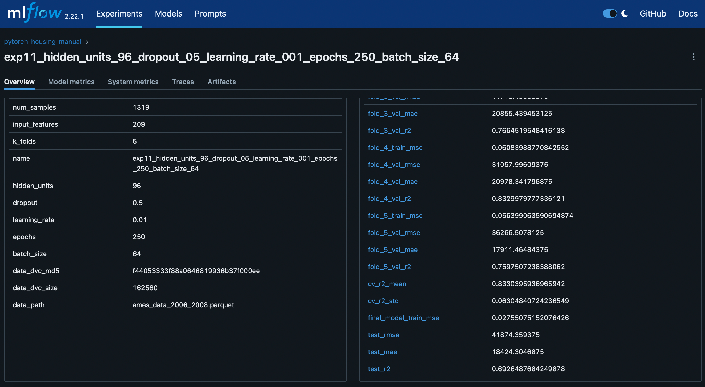
experiment_config = {
"name": "exp11_a_hidden_units_96_dropout_06_learning_rate_0008_epochs_250_batch_size_64",
"hidden_units": 96,
"dropout": 0.6,
"learning_rate": 0.008,
"epochs": 250,
"batch_size": 64,
}
training_config = base_config | experiment_config
trainer = PyTorchTrainer(training_config["model_class"], training_config)
results = trainer.fit(X_train, y_train_log, X_test, y_test)
Training samples: 1319 Input features: 209 Logged DVC metadata: f4405333... Starting 5-fold cross-validation for exp11_a_hidden_units_96_dropout_06_learning_rate_0005_epochs_250_batch_size_64... Training Fold 1/5... Fold 1 Validation - RMSE: 43725.82, MAE: 25754.44 R^2: 0.785 Training Fold 2/5... Fold 2 Validation - RMSE: 27762.97, MAE: 17644.72 R^2: 0.880 Training Fold 3/5... Fold 3 Validation - RMSE: 43392.04, MAE: 22575.32 R^2: 0.747 Training Fold 4/5... Fold 4 Validation - RMSE: 32370.81, MAE: 22154.46 R^2: 0.819 Training Fold 5/5... Fold 5 Validation - RMSE: 37131.64, MAE: 22132.82 R^2: 0.748 Cross-validation complete. Mean R^2: 0.796 (+/- 0.050) Training final model on all training data... Evaluating on test set... ================================================== Mean R^2: 0.796 (+/- 0.050) Cross-Validation Performance: R^2: 0.714 RMSE: 40421.47 MAE: 18431.81 Test Set Performance: ================================================== FINAL RESULTS for exp11_a_hidden_units_96_dropout_06_learning_rate_0005_epochs_250_batch_size_64: ================================================== 🏃 View run exp11_a_hidden_units_96_dropout_06_learning_rate_0005_epochs_250_batch_size_64 at: http://localhost:5001/#/experiments/2/runs/6df0d2ac13144fd9ab250d401934a0e3 🧪 View experiment at: http://localhost:5001/#/experiments/2
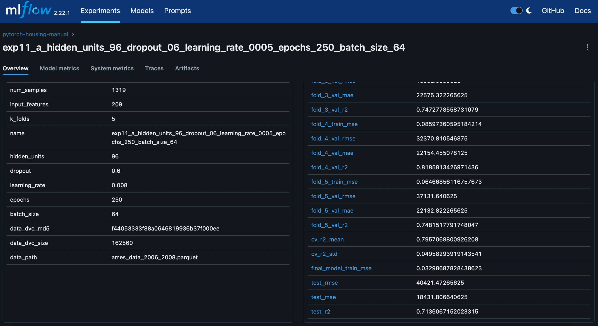
experiment_config = {
"name": "exp11_b_hidden_units_64_dropout_06_learning_rate_01_epochs_250_batch_size_64",
"hidden_units": 64,
"dropout": 0.6,
"learning_rate": 0.1,
"epochs": 250,
"batch_size": 64,
}
training_config = base_config | experiment_config
trainer = PyTorchTrainer(training_config["model_class"], training_config)
results = trainer.fit(X_train, y_train_log, X_test, y_test)
Training samples: 1319 Input features: 209 Logged DVC metadata: f4405333... Starting 5-fold cross-validation for exp11_b_hidden_units_64_dropout_06_learning_rate_01_epochs_250_batch_size_64... Training Fold 1/5... Fold 1 Validation - RMSE: 56483.22, MAE: 41631.29 R^2: 0.641 Training Fold 2/5... Fold 2 Validation - RMSE: 34149.73, MAE: 20109.39 R^2: 0.818 Training Fold 3/5... Fold 3 Validation - RMSE: 76467.62, MAE: 54413.20 R^2: 0.215 Training Fold 4/5... Fold 4 Validation - RMSE: 31869.54, MAE: 22696.38 R^2: 0.824 Training Fold 5/5... Fold 5 Validation - RMSE: 57420.44, MAE: 41318.26 R^2: 0.398 Cross-validation complete. Mean R^2: 0.579 (+/- 0.239) Training final model on all training data... Evaluating on test set... ================================================== Mean R^2: 0.579 (+/- 0.239) Cross-Validation Performance: R^2: 0.009 RMSE: 75200.03 MAE: 55391.75 Test Set Performance: ================================================== FINAL RESULTS for exp11_b_hidden_units_64_dropout_06_learning_rate_01_epochs_250_batch_size_64: ================================================== 🏃 View run exp11_b_hidden_units_64_dropout_06_learning_rate_01_epochs_250_batch_size_64 at: http://localhost:5001/#/experiments/2/runs/4eb76dc295994891a5efa8aeee6d81bf 🧪 View experiment at: http://localhost:5001/#/experiments/2
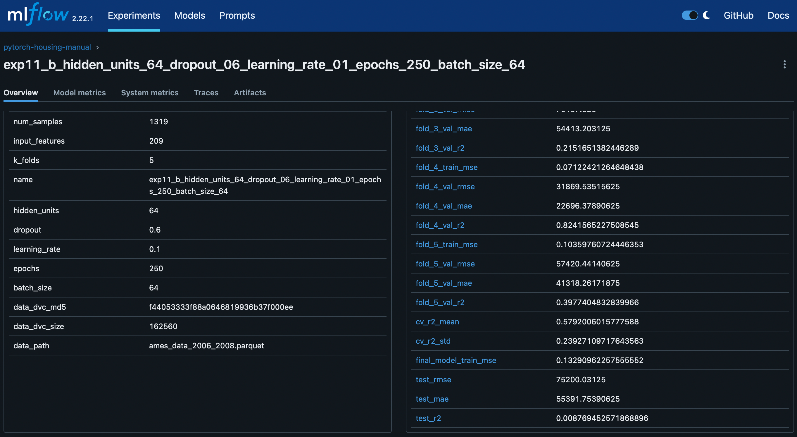
experiment_config = {
"name": "exp11_c_hidden_units_96_dropout_06_learning_rate_0008_epochs_500_batch_size_64",
"hidden_units": 96,
"dropout": 0.6,
"learning_rate": 0.008,
"epochs": 500,
"batch_size": 64,
}
training_config = base_config | experiment_config
trainer = PyTorchTrainer(training_config["model_class"], training_config)
results = trainer.fit(X_train, y_train_log, X_test, y_test)
Training samples: 1319 Input features: 209 Logged DVC metadata: f4405333... Starting 5-fold cross-validation for exp11_c_hidden_units_96_dropout_06_learning_rate_0008_epochs_500_batch_size_64... Training Fold 1/5... Fold 1 Validation - RMSE: 38606.45, MAE: 23938.54 R^2: 0.832 Training Fold 2/5... Fold 2 Validation - RMSE: 28582.90, MAE: 16113.82 R^2: 0.872 Training Fold 3/5... Fold 3 Validation - RMSE: 56129.93, MAE: 24229.28 R^2: 0.577 Training Fold 4/5... Fold 4 Validation - RMSE: 26886.48, MAE: 18209.92 R^2: 0.875 Training Fold 5/5... Fold 5 Validation - RMSE: 50954.30, MAE: 18809.29 R^2: 0.526 Cross-validation complete. Mean R^2: 0.736 (+/- 0.153) Training final model on all training data... Evaluating on test set... ================================================== Mean R^2: 0.736 (+/- 0.153) Cross-Validation Performance: R^2: -0.231 RMSE: 83813.94 MAE: 23961.42 Test Set Performance: ================================================== FINAL RESULTS for exp11_c_hidden_units_96_dropout_06_learning_rate_0008_epochs_500_batch_size_64: ================================================== 🏃 View run exp11_c_hidden_units_96_dropout_06_learning_rate_0008_epochs_500_batch_size_64 at: http://localhost:5001/#/experiments/2/runs/baf9d3cc9557429c957fd59a09287a26 🧪 View experiment at: http://localhost:5001/#/experiments/2
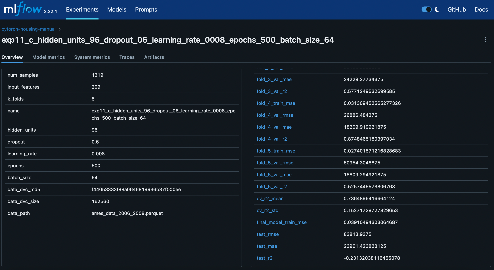
experiment_config = {
"name": "exp11_a_hidden_units_112_dropout_06_learning_rate_0008_epochs_250_batch_size_64",
"hidden_units": 112,
"dropout": 0.6,
"learning_rate": 0.008,
"epochs": 250,
"batch_size": 64,
}
training_config = base_config | experiment_config
trainer = PyTorchTrainer(training_config["model_class"], training_config)
results = trainer.fit(X_train, y_train_log, X_test, y_test)
Training samples: 1319 Input features: 209 Logged DVC metadata: f4405333... Starting 5-fold cross-validation for exp11_a_hidden_units_112_dropout_06_learning_rate_0008_epochs_250_batch_size_64... Training Fold 1/5... Fold 1 Validation - RMSE: 36192.97, MAE: 19999.00 R^2: 0.853 Training Fold 2/5... Fold 2 Validation - RMSE: 26126.82, MAE: 17191.09 R^2: 0.893 Training Fold 3/5... Fold 3 Validation - RMSE: 43634.82, MAE: 20192.25 R^2: 0.744 Training Fold 4/5... Fold 4 Validation - RMSE: 28738.14, MAE: 19491.99 R^2: 0.857 Training Fold 5/5... Fold 5 Validation - RMSE: 41824.33, MAE: 18790.86 R^2: 0.680 Cross-validation complete. Mean R^2: 0.806 (+/- 0.080) Training final model on all training data... Evaluating on test set... ================================================== Mean R^2: 0.806 (+/- 0.080) Cross-Validation Performance: R^2: 0.751 RMSE: 37663.61 MAE: 18821.96 Test Set Performance: ================================================== FINAL RESULTS for exp11_a_hidden_units_112_dropout_06_learning_rate_0008_epochs_250_batch_size_64: ================================================== 🏃 View run exp11_a_hidden_units_112_dropout_06_learning_rate_0008_epochs_250_batch_size_64 at: http://localhost:5001/#/experiments/2/runs/85ba1c22c4594d50a308cbea38d4f456 🧪 View experiment at: http://localhost:5001/#/experiments/2
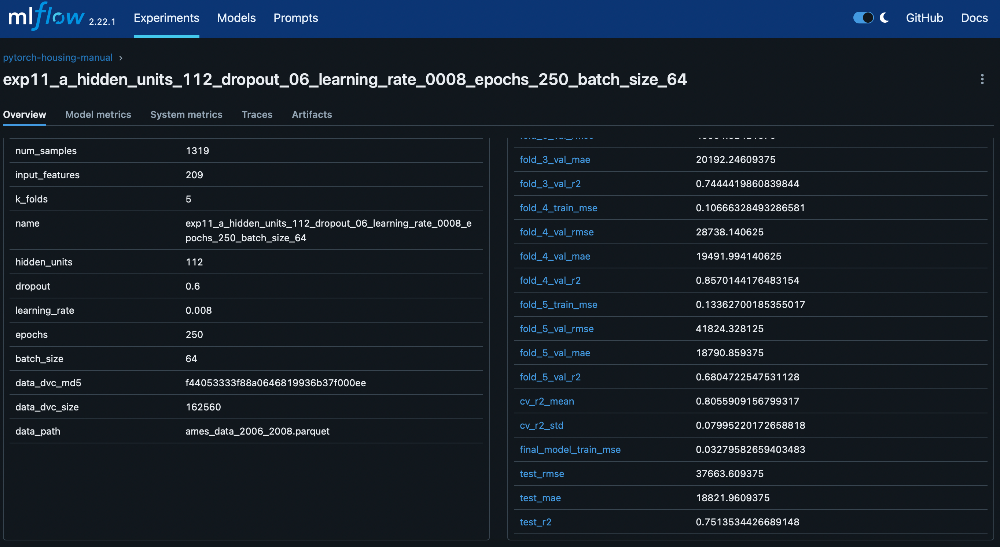
experiment_config = {
"name": "exp11_aa_hidden_units_112_dropout_06_learning_rate_0006_epochs_250_batch_size_64",
"hidden_units": 112,
"dropout": 0.6,
"learning_rate": 0.006,
"epochs": 250,
"batch_size": 64,
}
training_config = base_config | experiment_config
trainer = PyTorchTrainer(training_config["model_class"], training_config)
results = trainer.fit(X_train, y_train_log, X_test, y_test)
Training samples: 1319 Input features: 209 Logged DVC metadata: f4405333... Starting 5-fold cross-validation for exp11_aa_hidden_units_112_dropout_06_learning_rate_0006_epochs_250_batch_size_64... Training Fold 1/5... Fold 1 Validation - RMSE: 38895.48, MAE: 23571.52 R^2: 0.830 Training Fold 2/5... Fold 2 Validation - RMSE: 33492.67, MAE: 22268.86 R^2: 0.825 Training Fold 3/5... Fold 3 Validation - RMSE: 49303.95, MAE: 23242.12 R^2: 0.674 Training Fold 4/5... Fold 4 Validation - RMSE: 43705.02, MAE: 32920.25 R^2: 0.669 Training Fold 5/5... Fold 5 Validation - RMSE: 45797.38, MAE: 27593.02 R^2: 0.617 Cross-validation complete. Mean R^2: 0.723 (+/- 0.088) Training final model on all training data... Evaluating on test set... ================================================== Mean R^2: 0.723 (+/- 0.088) Cross-Validation Performance: R^2: 0.736 RMSE: 38777.42 MAE: 20314.99 Test Set Performance: ================================================== FINAL RESULTS for exp11_aa_hidden_units_112_dropout_06_learning_rate_0006_epochs_250_batch_size_64: ================================================== 🏃 View run exp11_aa_hidden_units_112_dropout_06_learning_rate_0006_epochs_250_batch_size_64 at: http://localhost:5001/#/experiments/2/runs/63228713b48946f38974c29e6feb4882 🧪 View experiment at: http://localhost:5001/#/experiments/2
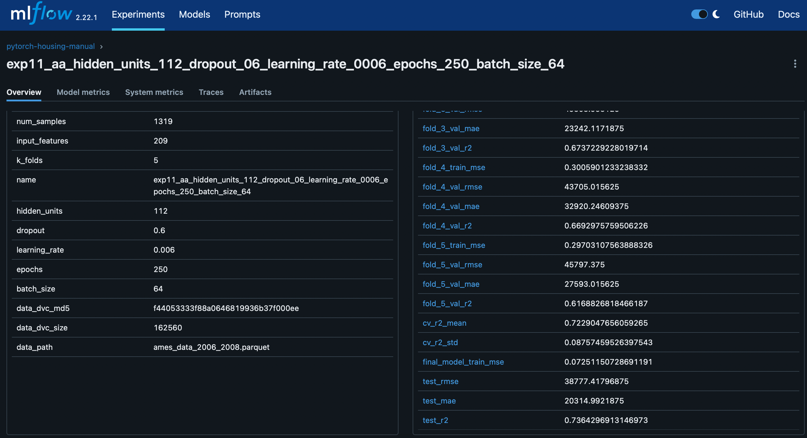
experiment_config = {
"name": "exp11_ab_hidden_units_112_dropout_06_learning_rate_0007_epochs_250_batch_size_64",
"hidden_units": 112,
"dropout": 0.6,
"learning_rate": 0.007,
"epochs": 250,
"batch_size": 64,
}
training_config = base_config | experiment_config
trainer = PyTorchTrainer(training_config["model_class"], training_config)
results = trainer.fit(X_train, y_train_log, X_test, y_test)
Training samples: 1319 Input features: 209 Logged DVC metadata: f4405333... Starting 5-fold cross-validation for exp11_ab_hidden_units_112_dropout_06_learning_rate_0007_epochs_250_batch_size_64... Training Fold 1/5... Fold 1 Validation - RMSE: 37630.63, MAE: 20017.56 R^2: 0.841 Training Fold 2/5... Fold 2 Validation - RMSE: 37604.21, MAE: 26486.20 R^2: 0.779 Training Fold 3/5... Fold 3 Validation - RMSE: 48789.88, MAE: 27094.57 R^2: 0.680 Training Fold 4/5... Fold 4 Validation - RMSE: 26291.77, MAE: 18529.48 R^2: 0.880 Training Fold 5/5... Fold 5 Validation - RMSE: 39858.54, MAE: 19856.70 R^2: 0.710 Cross-validation complete. Mean R^2: 0.778 (+/- 0.076) Training final model on all training data... Evaluating on test set... ================================================== Mean R^2: 0.778 (+/- 0.076) Cross-Validation Performance: R^2: 0.739 RMSE: 38599.34 MAE: 20588.19 Test Set Performance: ================================================== FINAL RESULTS for exp11_ab_hidden_units_112_dropout_06_learning_rate_0007_epochs_250_batch_size_64: ================================================== 🏃 View run exp11_ab_hidden_units_112_dropout_06_learning_rate_0007_epochs_250_batch_size_64 at: http://localhost:5001/#/experiments/2/runs/0e2720a12d394002ae608b4f479af228 🧪 View experiment at: http://localhost:5001/#/experiments/2
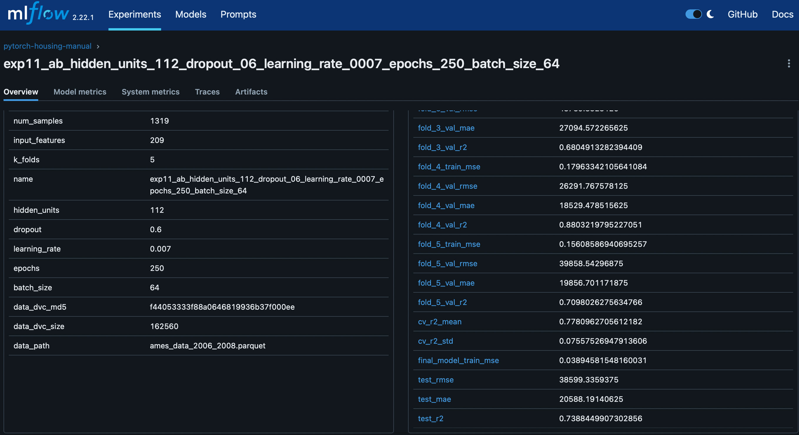
experiment_config = {
"name": "exp11_a_hidden_units_112_dropout_06_learning_rate_0007_epochs_300_batch_size_64",
"hidden_units": 112,
"dropout": 0.6,
"learning_rate": 0.007,
"epochs": 300,
"batch_size": 64,
}
training_config = base_config | experiment_config
trainer = PyTorchTrainer(training_config["model_class"], training_config)
results = trainer.fit(X_train, y_train_log, X_test, y_test)
Training samples: 1319 Input features: 209 Logged DVC metadata: f4405333... Starting 5-fold cross-validation for exp11_a_hidden_units_112_dropout_06_learning_rate_0007_epochs_300_batch_size_64... Training Fold 1/5... Fold 1 Validation - RMSE: 35587.66, MAE: 19217.88 R^2: 0.858 Training Fold 2/5... Fold 2 Validation - RMSE: 25549.84, MAE: 16721.53 R^2: 0.898 Training Fold 3/5... Fold 3 Validation - RMSE: 42998.91, MAE: 22798.70 R^2: 0.752 Training Fold 4/5... Fold 4 Validation - RMSE: 28400.01, MAE: 19501.97 R^2: 0.860 Training Fold 5/5... Fold 5 Validation - RMSE: 37876.14, MAE: 18785.28 R^2: 0.738 Cross-validation complete. Mean R^2: 0.821 (+/- 0.064) Training final model on all training data... Evaluating on test set... ================================================== Mean R^2: 0.821 (+/- 0.064) Cross-Validation Performance: R^2: 0.706 RMSE: 40982.88 MAE: 20074.97 Test Set Performance: ================================================== FINAL RESULTS for exp11_a_hidden_units_112_dropout_06_learning_rate_0007_epochs_300_batch_size_64: ================================================== 🏃 View run exp11_a_hidden_units_112_dropout_06_learning_rate_0007_epochs_300_batch_size_64 at: http://localhost:5001/#/experiments/2/runs/a63a4c17e39d40f08c4b1a1731fe95b6 🧪 View experiment at: http://localhost:5001/#/experiments/2
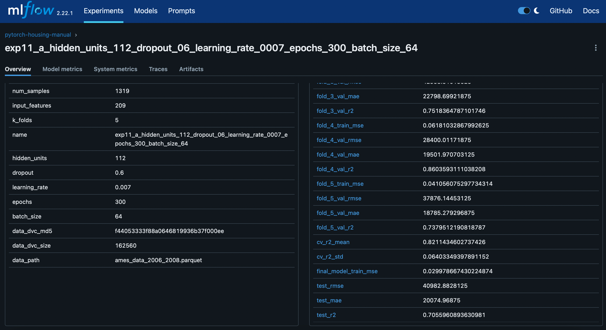
experiment_config = {
"name": "exp11_a_hidden_units_112_dropout_06_learning_rate_0006_epochs_300_batch_size_64",
"hidden_units": 112,
"dropout": 0.6,
"learning_rate": 0.006,
"epochs": 300,
"batch_size": 64,
}
training_config = base_config | experiment_config
trainer = PyTorchTrainer(training_config["model_class"], training_config)
results = trainer.fit(X_train, y_train_log, X_test, y_test)
Training samples: 1319 Input features: 209 Logged DVC metadata: f4405333... Starting 5-fold cross-validation for exp11_a_hidden_units_112_dropout_06_learning_rate_0006_epochs_300_batch_size_64... Training Fold 1/5... Fold 1 Validation - RMSE: 32077.66, MAE: 18037.37 R^2: 0.884 Training Fold 2/5... Fold 2 Validation - RMSE: 31213.83, MAE: 19560.35 R^2: 0.848 Training Fold 3/5... Fold 3 Validation - RMSE: 45857.44, MAE: 22197.96 R^2: 0.718 Training Fold 4/5... Fold 4 Validation - RMSE: 27835.29, MAE: 19009.03 R^2: 0.866 Training Fold 5/5... Fold 5 Validation - RMSE: 36384.76, MAE: 17195.41 R^2: 0.758 Cross-validation complete. Mean R^2: 0.815 (+/- 0.065) Training final model on all training data... Evaluating on test set... ================================================== Mean R^2: 0.815 (+/- 0.065) Cross-Validation Performance: R^2: 0.746 RMSE: 38062.99 MAE: 18397.21 Test Set Performance: ================================================== FINAL RESULTS for exp11_a_hidden_units_112_dropout_06_learning_rate_0006_epochs_300_batch_size_64: ================================================== 🏃 View run exp11_a_hidden_units_112_dropout_06_learning_rate_0006_epochs_300_batch_size_64 at: http://localhost:5001/#/experiments/2/runs/6974a35be8d2482688b363a4dad5348a 🧪 View experiment at: http://localhost:5001/#/experiments/2
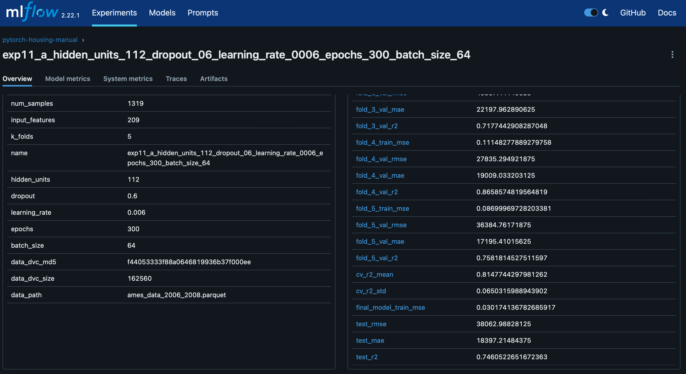
experiment_config = {
"name": "exp11_aca_hidden_units_112_dropout_065_learning_rate_00065_epochs_300_batch_size_64",
"hidden_units": 112,
"dropout": 0.65,
"learning_rate": 0.0065,
"epochs": 300,
"batch_size": 64,
}
training_config = base_config | experiment_config
trainer = PyTorchTrainer(training_config["model_class"], training_config)
results = trainer.fit(X_train, y_train_log, X_test, y_test)
Training samples: 1319 Input features: 209 Logged DVC metadata: f4405333... Starting 5-fold cross-validation for exp11_aca_hidden_units_112_dropout_065_learning_rate_00065_epochs_300_batch_size_64... Training Fold 1/5... Fold 1 Validation - RMSE: 35791.60, MAE: 19880.31 R^2: 0.856 Training Fold 2/5... Fold 2 Validation - RMSE: 24868.66, MAE: 16179.42 R^2: 0.903 Training Fold 3/5... Fold 3 Validation - RMSE: 44196.96, MAE: 23548.75 R^2: 0.738 Training Fold 4/5... Fold 4 Validation - RMSE: 29018.66, MAE: 19698.83 R^2: 0.854 Training Fold 5/5... Fold 5 Validation - RMSE: 35599.56, MAE: 17535.37 R^2: 0.769 Cross-validation complete. Mean R^2: 0.824 (+/- 0.061) Training final model on all training data... Evaluating on test set... ================================================== Mean R^2: 0.824 (+/- 0.061) Cross-Validation Performance: R^2: 0.677 RMSE: 42926.71 MAE: 18273.88 Test Set Performance: ================================================== FINAL RESULTS for exp11_aca_hidden_units_112_dropout_065_learning_rate_00065_epochs_300_batch_size_64: ================================================== 🏃 View run exp11_aca_hidden_units_112_dropout_065_learning_rate_00065_epochs_300_batch_size_64 at: http://localhost:5001/#/experiments/2/runs/3281538bd4e34292a6af8087bfbc7436 🧪 View experiment at: http://localhost:5001/#/experiments/2
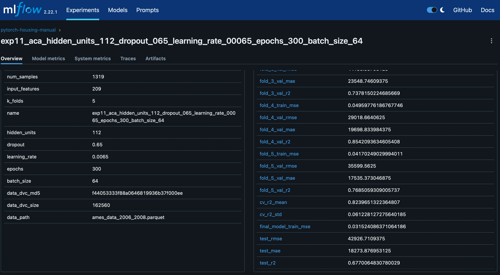
experiment_config = {
"name": "exp11_acb_hidden_units_112_dropout_059_learning_rate_00059_epochs_300_batch_size_64",
"hidden_units": 112,
"dropout": 0.59,
"learning_rate": 0.0059,
"epochs": 300,
"batch_size": 64,
}
training_config = base_config | experiment_config
trainer = PyTorchTrainer(training_config["model_class"], training_config)
results = trainer.fit(X_train, y_train_log, X_test, y_test)
Training samples: 1319 Input features: 209 Logged DVC metadata: f4405333... Starting 5-fold cross-validation for exp11_acb_hidden_units_112_dropout_059_learning_rate_00059_epochs_300_batch_size_64... Training Fold 1/5... Fold 1 Validation - RMSE: 41066.25, MAE: 23092.46 R^2: 0.810 Training Fold 2/5... Fold 2 Validation - RMSE: 27534.05, MAE: 17530.78 R^2: 0.882 Training Fold 3/5... Fold 3 Validation - RMSE: 46577.26, MAE: 26065.19 R^2: 0.709 Training Fold 4/5... Fold 4 Validation - RMSE: 31781.25, MAE: 21418.41 R^2: 0.825 Training Fold 5/5... Fold 5 Validation - RMSE: 42817.89, MAE: 24891.26 R^2: 0.665 Cross-validation complete. Mean R^2: 0.778 (+/- 0.079) Training final model on all training data... Evaluating on test set... ================================================== Mean R^2: 0.778 (+/- 0.079) Cross-Validation Performance: R^2: 0.756 RMSE: 37345.56 MAE: 18348.00 Test Set Performance: ================================================== FINAL RESULTS for exp11_acb_hidden_units_112_dropout_059_learning_rate_00059_epochs_300_batch_size_64: ================================================== 🏃 View run exp11_acb_hidden_units_112_dropout_059_learning_rate_00059_epochs_300_batch_size_64 at: http://localhost:5001/#/experiments/2/runs/4f8be297a624459e89415afaa0b755cd 🧪 View experiment at: http://localhost:5001/#/experiments/2
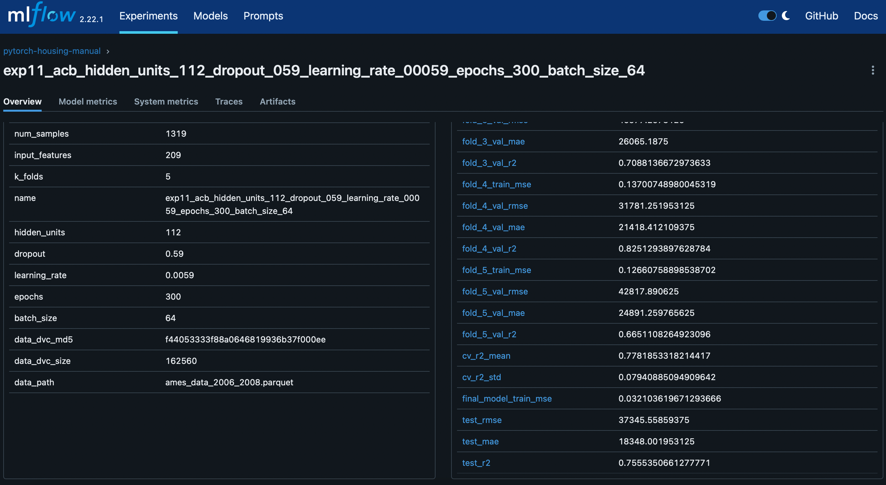
experiment_config = {
"name": "exp11_acd_hidden_units_112_dropout_0591_learning_rate_000591_epochs_300_batch_size_64",
"hidden_units": 112,
"dropout": 0.591,
"learning_rate": 0.00591,
"epochs": 300,
"batch_size": 64,
}
training_config = base_config | experiment_config
trainer = PyTorchTrainer(training_config["model_class"], training_config)
results = trainer.fit(X_train, y_train_log, X_test, y_test)
Training samples: 1319 Input features: 209 Logged DVC metadata: f4405333... Starting 5-fold cross-validation for exp11_acd_hidden_units_112_dropout_0591_learning_rate_000591_epochs_300_batch_size_64... Training Fold 1/5... Fold 1 Validation - RMSE: 38026.66, MAE: 22036.32 R^2: 0.837 Training Fold 2/5... Fold 2 Validation - RMSE: 28841.45, MAE: 18598.56 R^2: 0.870 Training Fold 3/5... Fold 3 Validation - RMSE: 48952.01, MAE: 25815.88 R^2: 0.678 Training Fold 4/5... Fold 4 Validation - RMSE: 28301.35, MAE: 19517.97 R^2: 0.861 Training Fold 5/5... Fold 5 Validation - RMSE: 37934.62, MAE: 18368.32 R^2: 0.737 Cross-validation complete. Mean R^2: 0.797 (+/- 0.076) Training final model on all training data... Evaluating on test set... ================================================== Mean R^2: 0.797 (+/- 0.076) Cross-Validation Performance: R^2: 0.727 RMSE: 39433.75 MAE: 18355.02 Test Set Performance: ================================================== FINAL RESULTS for exp11_acd_hidden_units_112_dropout_0591_learning_rate_000591_epochs_300_batch_size_64: ================================================== 🏃 View run exp11_acd_hidden_units_112_dropout_0591_learning_rate_000591_epochs_300_batch_size_64 at: http://localhost:5001/#/experiments/2/runs/04e3431ef6bb4e01a6cb1c9b1fa25bf8 🧪 View experiment at: http://localhost:5001/#/experiments/2
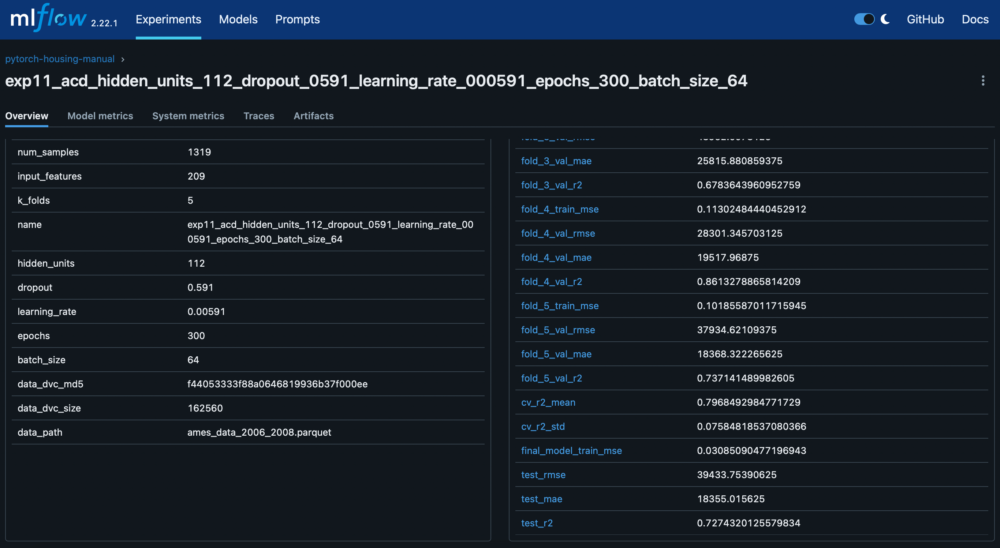
experiment_config = {
"name": "exp11_ace_hidden_units_112_dropout_059_learning_rate_0005905_epochs_300_batch_size_64",
"hidden_units": 112,
"dropout": 0.59,
"learning_rate": 0.005905,
"epochs": 300,
"batch_size": 64,
}
training_config = base_config | experiment_config
trainer = PyTorchTrainer(training_config["model_class"], training_config)
results = trainer.fit(X_train, y_train_log, X_test, y_test)
Training samples: 1319 Input features: 209 Logged DVC metadata: f4405333... Starting 5-fold cross-validation for exp11_ace_hidden_units_112_dropout_059_learning_rate_0005905_epochs_300_batch_size_64... Training Fold 1/5... Fold 1 Validation - RMSE: 40686.10, MAE: 23229.33 R^2: 0.814 Training Fold 2/5... Fold 2 Validation - RMSE: 29834.17, MAE: 19691.40 R^2: 0.861 Training Fold 3/5... Fold 3 Validation - RMSE: 44286.59, MAE: 22097.12 R^2: 0.737 Training Fold 4/5... Fold 4 Validation - RMSE: 31227.70, MAE: 21463.05 R^2: 0.831 Training Fold 5/5... Fold 5 Validation - RMSE: 39989.27, MAE: 18522.07 R^2: 0.708 Cross-validation complete. Mean R^2: 0.790 (+/- 0.058) Training final model on all training data... Evaluating on test set... ================================================== Mean R^2: 0.790 (+/- 0.058) Cross-Validation Performance: R^2: 0.757 RMSE: 37202.41 MAE: 18126.64 Test Set Performance: ================================================== FINAL RESULTS for exp11_ace_hidden_units_112_dropout_059_learning_rate_0005905_epochs_300_batch_size_64: ================================================== 🏃 View run exp11_ace_hidden_units_112_dropout_059_learning_rate_0005905_epochs_300_batch_size_64 at: http://localhost:5001/#/experiments/2/runs/654de664a00445b0ab1a9fa02dbb0371 🧪 View experiment at: http://localhost:5001/#/experiments/2
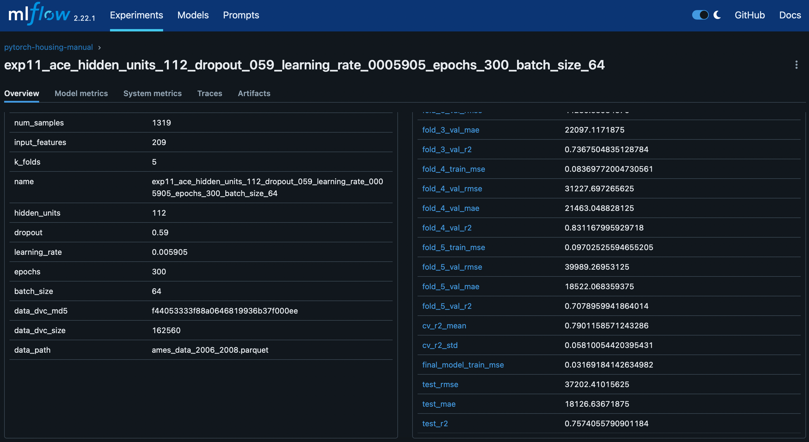
### THE BEST RESULT
experiment_config = {
"name": "exp11_acd_hidden_units_116_dropout_05975_learning_rate_00059113_epochs_300_batch_size_64",
"hidden_units": 116,
"dropout": 0.5975,
"learning_rate": 0.0059113,
"epochs": 300,
"batch_size": 64,
}
training_config = base_config | experiment_config
trainer = PyTorchTrainer(training_config["model_class"], training_config)
results = trainer.fit(X_train, y_train_log, X_test, y_test)
Training samples: 1319 Input features: 209 Logged DVC metadata: f4405333... Starting 5-fold cross-validation for exp11_acd_hidden_units_116_dropout_05975_learning_rate_00059113_epochs_300_batch_size_64... Training Fold 1/5... Fold 1 Validation - RMSE: 33963.23, MAE: 18850.21 R^2: 0.870 Training Fold 2/5... Fold 2 Validation - RMSE: 24063.94, MAE: 15900.02 R^2: 0.910 Training Fold 3/5... Fold 3 Validation - RMSE: 43409.84, MAE: 20265.19 R^2: 0.747 Training Fold 4/5... Fold 4 Validation - RMSE: 28563.85, MAE: 19482.19 R^2: 0.859 Training Fold 5/5... Fold 5 Validation - RMSE: 39589.58, MAE: 17387.01 R^2: 0.714 Cross-validation complete. Mean R^2: 0.820 (+/- 0.076) Training final model on all training data... Evaluating on test set... ================================================== Mean R^2: 0.820 (+/- 0.076) Cross-Validation Performance: R^2: 0.749 RMSE: 37807.67 MAE: 17915.85 Test Set Performance: ================================================== FINAL RESULTS for exp11_acd_hidden_units_116_dropout_05975_learning_rate_00059113_epochs_300_batch_size_64: ================================================== 🏃 View run exp11_acd_hidden_units_116_dropout_05975_learning_rate_00059113_epochs_300_batch_size_64 at: http://localhost:5001/#/experiments/2/runs/8caf89d972f34890a73260ebeed9b56b 🧪 View experiment at: http://localhost:5001/#/experiments/2
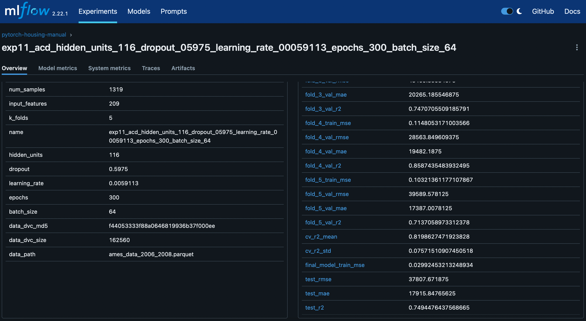
experiment_config = {
"name": "exp11_acb_hidden_units_112_dropout_058_learning_rate_00058_epochs_300_batch_size_64",
"hidden_units": 112,
"dropout": 0.58,
"learning_rate": 0.0058,
"epochs": 300,
"batch_size": 64,
}
training_config = base_config | experiment_config
trainer = PyTorchTrainer(training_config["model_class"], training_config)
results = trainer.fit(X_train, y_train_log, X_test, y_test)
Training samples: 1319 Input features: 209 Logged DVC metadata: f4405333... Starting 5-fold cross-validation for exp11_acb_hidden_units_112_dropout_058_learning_rate_00058_epochs_300_batch_size_64... Training Fold 1/5... Fold 1 Validation - RMSE: 46702.41, MAE: 30304.94 R^2: 0.755 Training Fold 2/5... Fold 2 Validation - RMSE: 28503.26, MAE: 18322.53 R^2: 0.873 Training Fold 3/5... Fold 3 Validation - RMSE: 46020.32, MAE: 21513.25 R^2: 0.716 Training Fold 4/5... Fold 4 Validation - RMSE: 28632.87, MAE: 19553.81 R^2: 0.858 Training Fold 5/5... Fold 5 Validation - RMSE: 37827.97, MAE: 17087.96 R^2: 0.739 Cross-validation complete. Mean R^2: 0.788 (+/- 0.065) Training final model on all training data... Evaluating on test set... ================================================== Mean R^2: 0.788 (+/- 0.065) Cross-Validation Performance: R^2: 0.733 RMSE: 39046.90 MAE: 17234.88 Test Set Performance: ================================================== FINAL RESULTS for exp11_acb_hidden_units_112_dropout_058_learning_rate_00058_epochs_300_batch_size_64: ================================================== 🏃 View run exp11_acb_hidden_units_112_dropout_058_learning_rate_00058_epochs_300_batch_size_64 at: http://localhost:5001/#/experiments/2/runs/614975b7af054ed894066eb07b4c6c68 🧪 View experiment at: http://localhost:5001/#/experiments/2
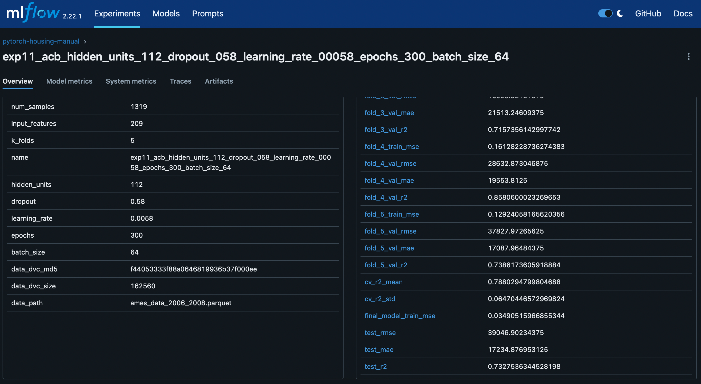
experiment_config = {
"name": "exp11_acb_hidden_units_112_dropout_058_learning_rate_00059_epochs_300_batch_size_64",
"hidden_units": 112,
"dropout": 0.58,
"learning_rate": 0.0059,
"epochs": 300,
"batch_size": 64,
}
training_config = base_config | experiment_config
trainer = PyTorchTrainer(training_config["model_class"], training_config)
results = trainer.fit(X_train, y_train_log, X_test, y_test)
Training samples: 1319 Input features: 209 Logged DVC metadata: f4405333... Starting 5-fold cross-validation for exp11_acb_hidden_units_112_dropout_058_learning_rate_00059_epochs_300_batch_size_64... Training Fold 1/5... Fold 1 Validation - RMSE: 41268.71, MAE: 24221.47 R^2: 0.808 Training Fold 2/5... Fold 2 Validation - RMSE: 33755.81, MAE: 22081.12 R^2: 0.822 Training Fold 3/5... Fold 3 Validation - RMSE: 51668.93, MAE: 25270.04 R^2: 0.642 Training Fold 4/5... Fold 4 Validation - RMSE: 29137.17, MAE: 20103.04 R^2: 0.853 Training Fold 5/5... Fold 5 Validation - RMSE: 35219.29, MAE: 16638.26 R^2: 0.773 Cross-validation complete. Mean R^2: 0.780 (+/- 0.074) Training final model on all training data... Evaluating on test set... ================================================== Mean R^2: 0.780 (+/- 0.074) Cross-Validation Performance: R^2: 0.726 RMSE: 39529.83 MAE: 17195.83 Test Set Performance: ================================================== FINAL RESULTS for exp11_acb_hidden_units_112_dropout_058_learning_rate_00059_epochs_300_batch_size_64: ================================================== 🏃 View run exp11_acb_hidden_units_112_dropout_058_learning_rate_00059_epochs_300_batch_size_64 at: http://localhost:5001/#/experiments/2/runs/bbcc19f7b1a4401fa31634e7040a8f5d 🧪 View experiment at: http://localhost:5001/#/experiments/2
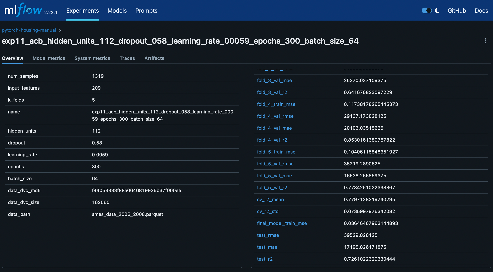
experiment_config = {
"name": "exp11_acb_hidden_units_112_dropout_059_learning_rate_00058_epochs_300_batch_size_64",
"hidden_units": 112,
"dropout": 0.59,
"learning_rate": 0.0058,
"epochs": 300,
"batch_size": 64,
}
training_config = base_config | experiment_config
trainer = PyTorchTrainer(training_config["model_class"], training_config)
results = trainer.fit(X_train, y_train_log, X_test, y_test)
Training samples: 1319 Input features: 209 Logged DVC metadata: f4405333... Starting 5-fold cross-validation for exp11_acb_hidden_units_112_dropout_059_learning_rate_00058_epochs_300_batch_size_64... Training Fold 1/5... Fold 1 Validation - RMSE: 32866.66, MAE: 18368.20 R^2: 0.878 Training Fold 2/5... Fold 2 Validation - RMSE: 33345.66, MAE: 22227.75 R^2: 0.826 Training Fold 3/5... Fold 3 Validation - RMSE: 50826.59, MAE: 29372.02 R^2: 0.653 Training Fold 4/5... Fold 4 Validation - RMSE: 31811.69, MAE: 20734.03 R^2: 0.825 Training Fold 5/5... Fold 5 Validation - RMSE: 36594.37, MAE: 20388.12 R^2: 0.755 Cross-validation complete. Mean R^2: 0.788 (+/- 0.078) Training final model on all training data... Evaluating on test set... ================================================== Mean R^2: 0.788 (+/- 0.078) Cross-Validation Performance: R^2: 0.674 RMSE: 43126.27 MAE: 17929.48 Test Set Performance: ================================================== FINAL RESULTS for exp11_acb_hidden_units_112_dropout_059_learning_rate_00058_epochs_300_batch_size_64: ================================================== 🏃 View run exp11_acb_hidden_units_112_dropout_059_learning_rate_00058_epochs_300_batch_size_64 at: http://localhost:5001/#/experiments/2/runs/ac3f8dd6be1d4b8a8caccacf173e05cd 🧪 View experiment at: http://localhost:5001/#/experiments/2
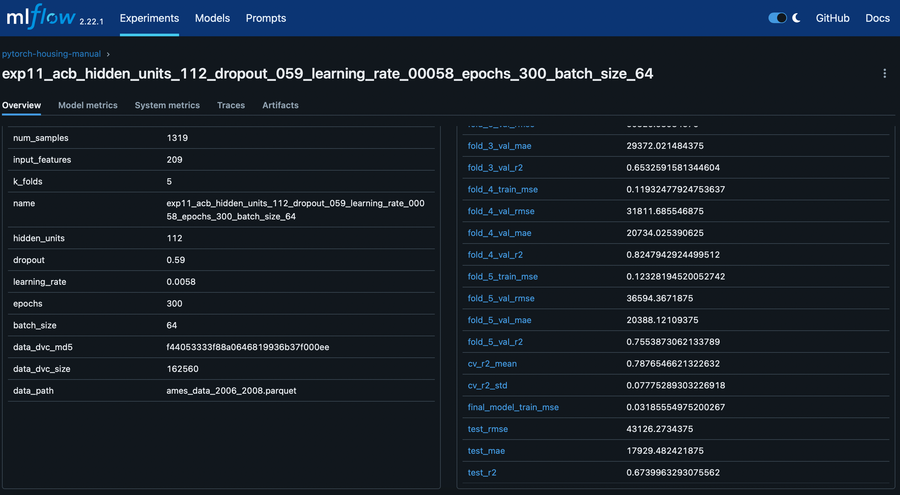
experiment_config = {
"name": "exp11_a_hidden_units_96_dropout_06_learning_rate_0008_epochs_250_batch_size_128",
"hidden_units": 96,
"dropout": 0.6,
"learning_rate": 0.008,
"epochs": 250,
"batch_size": 128,
}
training_config = base_config | experiment_config
trainer = PyTorchTrainer(training_config["model_class"], training_config)
results = trainer.fit(X_train, y_train_log, X_test, y_test)
Training samples: 1319 Input features: 209 Logged DVC metadata: f4405333... Starting 5-fold cross-validation for exp11_a_hidden_units_96_dropout_06_learning_rate_0008_epochs_250_batch_size_128... Training Fold 1/5... Fold 1 Validation - RMSE: 84853.26, MAE: 63022.44 R^2: 0.190 Training Fold 2/5... Fold 2 Validation - RMSE: 45368.91, MAE: 30402.87 R^2: 0.679 Training Fold 3/5... Fold 3 Validation - RMSE: 68735.98, MAE: 50441.71 R^2: 0.366 Training Fold 4/5... Fold 4 Validation - RMSE: 55565.25, MAE: 45750.84 R^2: 0.465 Training Fold 5/5... Fold 5 Validation - RMSE: 58557.21, MAE: 47771.93 R^2: 0.374 Cross-validation complete. Mean R^2: 0.415 (+/- 0.159) Training final model on all training data... Evaluating on test set... ================================================== Mean R^2: 0.415 (+/- 0.159) Cross-Validation Performance: R^2: 0.343 RMSE: 61242.05 MAE: 48789.84 Test Set Performance: ================================================== FINAL RESULTS for exp11_a_hidden_units_96_dropout_06_learning_rate_0008_epochs_250_batch_size_128: ================================================== 🏃 View run exp11_a_hidden_units_96_dropout_06_learning_rate_0008_epochs_250_batch_size_128 at: http://localhost:5001/#/experiments/2/runs/08206e0f86cb44189dbcd96c19d0d896 🧪 View experiment at: http://localhost:5001/#/experiments/2
2. Analyze results in MLflow UI.¶
First run metrics¶
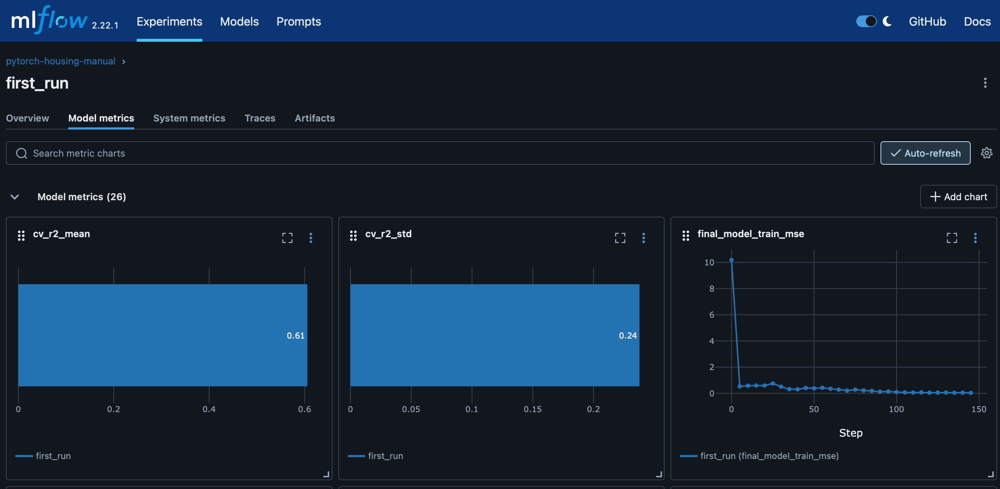
The best run metrics¶
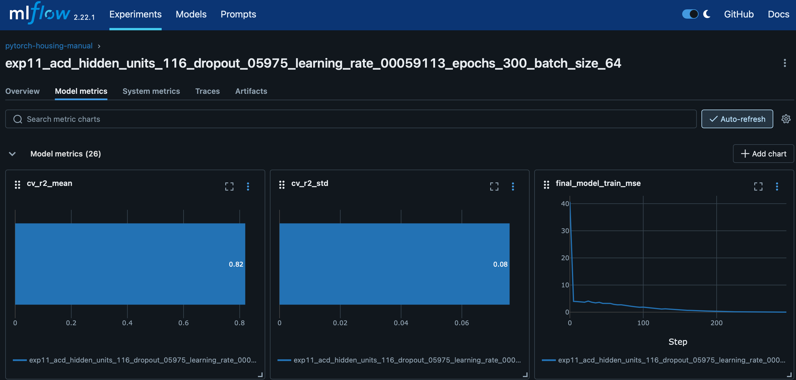
Initially, the model achieved relatively weak performance:
R²: 0.643 RMSE: 45132.48 MAE: 19131.90
After running more than 10 experiments with different hyperparameter configurations, the results improved significantly:
R²: 0.749 RMSE: 37807.67 MAE: 17915.85
The improvement indicates that the model was able to better capture underlying patterns in the data and reduce prediction errors.
Using the MLflow UI, it was possible to compare experiments and identify patterns between hyperparameters and model performance.
Key differences in configuration
Baseline (first_run):
- hidden units: 128
- dropout: 0.1
- learning rate: 0.03
- epochs: 150
- batch size: 32
Best run (exp11_acd_hidden_units_116_dropout_05975_learning_rate_00059113_epochs_300_batch_size_64):
- hidden units: 116
- dropout: 0.5975
- learning rate: 0.0059
- epochs: 300
- batch size: 64
3. Comment on what changes impacted the model performance the most, and what changes disrupted the training process.¶
Key observations:
- reducing it to ~0.006 significantly improved performance.
- increasing dropout from 0.1 to ~0.6 helped reduce overfitting
- increasing the number of epochs from 150 to 300 allowed the model to better converge
- a small reduction in hidden units (128 → 116) likely helped prevent overfitting while maintaining sufficient capacity
- increasing batch size (32 → 64) may have contributed to more stable gradient updates
- too high dropout (> 0.6) resulted in underfitting (higher RMSE and lower R²)
- too low dropout led to strong overfitting
- very high learning rate caused unstable training
- reducing the number of epochs too aggressively (e.g. 100 epochs), example: exp07_epochs_100, caused the model did not have enough time to converge
- combining high learning rate with deep networks led to poor and inconsistent results
- reducing training time too much can be as harmful as overtraining
- the model requires enough epochs to converge, especially when learning rate is not optimal
- best performance comes from balancing: learning rate, dropout, number of epochs
4. Compare the results of our first scikit-learn configuration with the first PyTorch experiments. Do you see any overfitting in the first PyTorch experiment? Explain what signs of overfitting can indicate this situation.¶
Comparison between results of first scikit-learn configuration and the first PyTorch experiment¶
The following models were evaluated using scikit-learn:
Ridge Regression R²: 0.828 CV R²: 0.841 ± 0.067
Decision Tree R²: 0.682 CV R²: 0.737 ± 0.086
K-Nearest Neighbors R²: 0.747 CV R²: 0.685 ± 0.065
Random Forest R²: 0.878 CV R²: 0.853 ± 0.062
Gradient Boosting R²: 0.899 CV R²: 0.863 ± 0.070
First PyTorch experiment Test R²: 0.643 CV R²: 0.606 ± 0.238
Overall performance¶
The best scikit-learn model (Gradient Boosting) achieved R² ≈ 0.90, while the first PyTorch model reached only R² ≈ 0.64
Traditional ML approaches demonstrate a significant advantage over the initial neural network architecture.
Stability¶
scikit-learn models:
- low variance (std ≈ 0.06–0.08)
- consistent results across folds
PyTorch:
- very high variance (std = 0.238)
- strong inconsistency (e.g. R² = 0.133 in one fold)
Neural network training is much less stable in this configuration.
Sckit-learn models characteristics¶
Gradient Boosting (R²: 0.899, CV R²: 0.863 ± 0.070) performed the best, simpler model Decision Tree (R²: 0.682, CV R²: 0.737 ± 0.086) performed worse. Linear models performed rather well, but are generally more sensitive to outliers.
Later scikit-learn experiments brief summary¶
Among linear models, Lasso performed slightly worse than Huber or Ridge-based methods, and the LARS Lasso variant completely failed on the test set despite reasonable CV results. At the same time, the Huber model, which is more robust to outliers, achieved strong performance. This may suggest the presence of outliers or extreme values in the dataset, as well as possible instability related to feature scaling or data distribution.
Summary¶
Instead of classic overfitting, the first PyTorch model exhibits:
- high variance
- instability
- poor robustness
Overfitting in the first PyTorch experiment¶
The cross-validation results show significant variability between folds:
R² ranges from 0.13 to 0.76 standard deviation: 0.238
One fold (Fold 5) performs significantly worse than the others, which suggests:
- sensitivity to data distribution
- presence of outliers or difficult samples
There is no clear evidence of strong overfitting, because test R² (0.643) is close to CV mean R² (0.606) and performance on unseen data is consistent with validation. However, the model shows high variance across folds which indicates instability rather than classic overfitting.
The poor performance in one fold suggests that the dataset may contain outliers or non-uniform distributions, which negatively affect neural network training.
Overfitting in other experiments¶
In later PyTorch experiments, signs of overfitting become more visible. In particular, some configurations achieve relatively high cross-validation scores, but perform significantly worse on the test set. For example, in one run the model reached CV R² ≈ 0.79, while the test R² dropped to 0.19. This indicates that the model fits the training data well but fails to generalize to unseen data.